soil-core-log-tidy FAIL 0
apps libreoffice_writer
The core sample log on my desktop got typed in as it came off the bench. Get it grouped by transect so I can read it, transects in alphabetical order, rows inside each keeping their depth order shallow to deep. Save it in place.
task config + evaluator
{
"config": [
{
"type": "execute",
"parameters": {
"command": "mkdir -p '/home/user/Desktop' && : > '/tmp/__fixture.b64' && printf %s 'UEsDBBQAAAgAALiJHl1exjIMJwAAACcAAAAIAAAAbWltZXR5cGVhcHBsaWNhdGlvbi92bmQub2FzaXMub3BlbmRvY3VtZW50LnRleHRQSwMEFAAACAAAuIkeXQAAAAAAAAAAAAAAABoAAABDb25maWd1cmF0aW9uczIvdG9vbHBhbmVsL1BLAwQUAAAIAAC4iR5dAAAAAAAAAAAAAAAAHAAAAENvbmZpZ3VyYXRpb25zMi9wcm9ncmVzc2Jhci9QSwMEFAAACAAAuIkeXQAAAAAAAAAAAAAAABoAAABDb25maWd1cmF0aW9uczIvc3RhdHVzYmFyL1BLAwQUAAAIAAC4iR5dAAAAAAAAAAAAAAAAGAAAAENvbmZpZ3VyYXRpb25zMi90b29sYmFyL1BLAwQUAAAIAAC4iR5dAAAAAAAAAAAAAAAAGAAAAENvbmZpZ3VyYXRpb25zMi9mbG9hdGVyL1BLAwQUAAAIAAC4iR5dAAAAAAAAAAAAAAAAGgAAAENvbmZpZ3VyYXRpb25zMi9wb3B1cG1lbnUvUEsDBBQAAAgAALiJHl0AAAAAAAAAAAAAAAAYAAAAQ29uZmlndXJhdGlvbnMyL21lbnViYXIvUEsDBBQACAgIALiJHl0AAAAAAAAAAAAAAAAMAAAAbWFuaWZlc3QucmRmzZPNboMwEITvPIVlzthALwUFcijKuWqfwDWGWAUv8poS3r6Ok1ZRpKrqn9TjrkYz3460m+1hHMiLsqjBVDRjKSXKSGi16Ss6uy65pds62ti2Kx+aHfFqg6WfKrp3bio5X5aFLTcMbM+zoih4mvM8T7wiwdU4cUgMxrSOCAkejUJp9eR8GjnO4glmV1F066CQefcgPYvdOqmgsgphtlK9h7YgkYFAjQlMyoR0gxy6TkvFM5bzUTnBoe3ix2C904OiPGDwK47P2N6IDKblXuC9sO5cg998lWh67mN6ddPF8d8jlGCcMu5P6rs7ef/n/i7P/xnir7R2RGxAzqNn+pDntPIfVUevUEsHCLT3aNIFAQAAgwMAAFBLAwQUAAgICAC4iR5dAAAAAAAAAAAAAAAACAAAAG1ldGEueG1sjVI9b4MwFNz7K5CbFRwgTYIFROrQKVKXVuoWOfYLcQs2sk3Izy84QNM0Qze/u3sfd3K6OVeldwJthJIZCoM58kAyxYUsMvT+9uKv0SZ/SNXhIBgQrlhTgbR+BZZ6Xas0pNCclxk6WlsTjNu2Ddo4ULrA0Xwe4wJzaql/EtA+oqGjb85QoyVR1AhDJK3AEMuIqkGOK8iPlrizLjVn06q60aVbxBmGEvomg8MgxKP2XAr5de+yMEkS7NhRqpSahP0VF7+jjQW+1JPaVf+1MGTnTAzvq8BjlI/p9l7z1DmegjaWWmGsYJ7DLd2X4DPVSJuhbp4DRUWLP6DafwKzt2h9pQwnTNNC0/o4EU8D0yrNRzBJBpAdOz2zoEdm8bQcKKmk3x6FBVNT1u25VcarCOHBYQESNLVK51ux1/DqIsCrIA5WQTTbCtmcdx/r5W658K4Eu1qr3heO57PnRpTcj1J8My/Fv/LE9/5u/g1QSwcI8z4HY2oBAAD5AgAAUEsDBBQACAgIALiJHl0AAAAAAAAAAAAAAAAMAAAAc2V0dGluZ3MueG1svVpLcxo5EL7vr3Bxd3Aem0oom9SATcwGDAU4rt2bmGkYrYV6StIY+Pfb0gzEweA4HnpPMK9u9fvrls6/rBbq5AGMlagvam/fnNVOQMeYSD2/qN1OOqefal+af5zjbCZjaCQY5wvQ7tSCc/SKPaHPtW3EqGeSPsiNbqCw0ja0WIBtuLiBGejNZ43HbzcCs+LOSkl9f1FLncsa9fpyuXyzfP8Gzbz+9vPnz/XwdPMqIm5f9LSLlYWX352dfagX19u3w9VLF1ZKGRZW/n+kmve15kYPG/Gb56Usxc+pdLDwujkpb3tmFzVacuNBwnKrtdq+737+5ju9HxkQE8xqmydundEThXpea56d15+SeDnZHswcB907mbiUg/A1yHl61CWPU1yOICHfgnYq9BzsDvUpogKha01ncngdj65uGVxa6GMCh6jPhLIHyO+56X3o5V5X3MiNcOTDv+N+QyO1Gxq0GcS7Wn/Jyl9EfwQ+uiDhoj8mYRX8hdODlq3KwYfRULC4TqA/EVPFRryN2hlUXOS9Xloivp8bzPVBG1dkcmnEMrg0D/mWIgE6pCc2D4q0RhfCc0+OsCka9+oEV3gQrNyQpIAUVQKGRQx0lCQ6ElTCo6ZAv4V4vxDmnoPF1SJz68tpEOFaJmCHwojju9SltD6eB7OZj40hWuntTu7LINI4nzojyCxqbSMdkyNBEoUrHhNlPaqj40zEJM44Jc+7tx1prPO3j6/JKMvU2htpbkSW9sktOmgWwk3wJl9MwfDo9GvuHJjIPcVkx6A+IZRTlqw2qnxB0AHEfWRDHvV/WRx/Csl4bekBV5YLLNq4yBSsxrGRmXuW0+t9IjCKrBSan02PMvb/wGag1fqWABKXbTwCkDrH3F7phOrQYahR1QHYJFAyyyAZytjlhmX5HYXCOZ+3b5Dqz1xqDi63eupDPLDZZDAOPtcgCAWUeboFCpc9Yd1z5a4Cs0gR/YBCCIO3hY5BHT9QKD4GKglcwPTBGRlzKI6Q+IC6lX7wAB76dgSK8soDTLCrE9AH+66qyuKskV1NWiKwZn64GRd0HooMTMfgYgwu56jIt1kiHHgOE6D6Rf+Pb5F2bgyZ+lJQihGWKv9iIXQyIfI7vEjgV3cCBMLuC2EONxlvXxnjSeKzR2nqCYaOtQ2Ko63sGPqJcodLP2W6ky7tE6xlSl77DbOrOxfCqP5CjwXjA9vPHYlyT6wx343xkmAzlfP0lAoaAUHfI1RAyRTyxgvB1CF3xOqGrl6tlx01+98x5iauQJEgQWTbqfDtD8H1svm5M/SqoQYoeBFHiejab2B0QKDDXBMgCW09R28nqEaklMS1kDwV1XdTYPzs4I4arIwniVPquFqRTbRQPYIlzzCp0CgW6SlkpV+Uo9czGbu1AnuDlzATueIYl3pvdj7zFVmcKZapYu+rpBSWHz+0pBZm/ZL426PyyI0dCXD8ZY+s3E3JoU5+Ovvz/bsPFfqVBJJNSqqU3sJIidNwg9z5HYwePID6O4zgONFdB9H5PrGrixHFBP104opjvBspOdfkRGOH2WZUxgC/NmXCTyio3vq9vj3g6wiDWDCVHMnn/K8Kp0JdlnuWHtSxjaXB8KPrTZl5NDnkqTI+HT1iwgtSt2INpv9C7HinvMFWX/0M9Jmut0JhI3DmN282QGC8EOog4Kg2h6JE/gNwDDQpjzTHwKpv76g39dE+MYSe/BRECZ5AIi+Lwg5h0c2TV2wn1rare9Lybaz6vXKmfclyEMIXsN25Jry+3TwolNfVnGWtPAZQ7jRRtH6DdUUUdIk36P7KrZOztRfDhnZV6FwormH+T3v2o0mPi0XYLWPyrqC2EVgIM8nIOWMpbsj2foDMUx1CPziYzYgnS1cY3NmP9yKdFLmGJPIu0RYqzhVXk9hDkYyorUKtnvjyEcgHQ7VF5sfufhOeErYdaO8VPFb6DsbJWChma93qFVknhn/AIDWnv+hLKw0LemIKWzDHU34UjHD5DYADvvnWa0TtwLHbr5BiriV1YNrDAcYDC4TSWAFGX2of5sXJtda6wxKHP07Y+ITpK/OvjsRUHDx9Lw5EDnRboeUI9r5waYuqra/IoQl8Lj4qYFuPZSmB2SFQvGtHmevjRxZsqxRxgVA1fc/Bc7akhGUzhcvfJ37wnGH9yXnX+qGTwM3/AFBLBwj9t6PZWAYAAEssAABQSwMEFAAACAAAuIkeXSlBkO+MFgAAjBYAABgAAABUaHVtYm5haWxzL3RodW1ibmFpbC5wbmeJUE5HDQoaCgAAAA1JSERSAAABagAAAgAIAwAAAJyB1nAAAABgUExURQICAhsbGyIiIiwsLDU1NTw8PEJCQkxMTFNTU1tbW2RkZGtra3Nzc3t7e4ODg4uLi5OTk5ubm6Ojo6qqqrOzs7u7u8PDw8vLy9PT09vb2+Pj4+vr6/Pz8/7+/gAAAP///wWnwxYAABXnSURBVHja7Z2JkqQ4lkVrpit9Qfu+//9vjiTAAzyirKvSbLozg3vN0oLEBUQcF4+rp4U/GvQf0h9AANRADQE1UENADdRADQE1UENADdRADQE1UENADdRADQE1UENADdRADQE1UENADdRADQE1UENADdQQUAP1hVGb5vL4Gfo/3yoN+weZidpC7FvyWF6LWbyplkmaW0nYt3OG9MWFUmxx7vf94OMpX9ucx32zxtOxflz4tMfx8NuhJk60yEO4iWJuqlm3gwjKicpTJ7lUrXyTav7RspYqdbP9L9crj6WUfkgtmhfPJ0ztB4vcDzkQS1Kp2Pfam2yV96uI4pTpJyRNzgtWUpZmRc7CVv6w4yr9nFnK6m+ihv7F6/5Db2VrCcWXXsDl6nrZ4pr9xVE/f9T2cM/Gamu0E3KdgTAD9f0ZmvWNlKeXTkrJ+rfQCmFFBhlH2RV16VteeRX7X/9wy4a6c6PWqPWvL5MO+8HS09JxZGXjGMED7eWeka0FbkSmxTDpSkuq9VP6vNTqhGq9eP8FY7+wtnzeVYxGFWXuF03CeK5poJn/4qiXyOoSwgG1sKHMWm3cqOSkdWZRcTf3tn4L8NJZDtTrPdzpWptE1D2krKGj3wOFN6KDtdudMH485D3SXmCg5i0xz0ThmfYLuGXgqzQJz0OqmvRboIlsbZYt8H7b0RFeqjOZ6yjX6FQXFUWO/VajrBEfqqTpVw8gTXjJZeu3f2Oy5SUkytJE3UgkNGn2KISqSNngkSnxkZAq76ZFMqu1YqoSkjrqHm1nRNULi5TaTJbjPf3M/d7hpnHRr2rKwoQoPUTxJXFSZrVvLFPuHOcdpE39Knn8QlQ1yau9y0JI1FFPorT/RssjJz2u3wJlpdy+hQMxwv/UYTT/5/5Ypb8F6vRzyOJ/kHSL8NXw1RBQAzUE1EAN1NB/D7U15i8atKW+7fD2Y09uZW/VpPTJR1djTPko+u9U8idXXOw8XrrexM/t06ns74g6Lq6U6KoLLYXYUscZQm+W+0Ll23fw9KQl14uF5h8ucbfu5rVlW6P3tb4SPuERanQdYKz24UvuMIMr2dYvmkc+BTVyVkfVxYfqcust82ZCqy6Nf/Fh5mby9LcMIKw0R1x2NDKz1CUUJ4QzyhfxDoY0EqiWWrCYl5wWabfdlYREqbCNHspGpkzktCWSg+k3xM3HxX6RfGOauDsl552hI+ZuaVl01L5xSypzoZDUmO2/pCW/LWrbHCeOF141DUKoOG5a/X5TL41qorwKbkBNMuqNaupAuHSmkUNZxVRoj17zWQumH8FafKovbnxepJH1rZrGkZJqPE/U/TRK1nHuXuqhVBLt963VrhmxOFF4UcJ6ppPjujr+FmWfimZivGYkt8W/UPc/e+n1V3p9qtWJ6mAsLe0Z8kJtZb3yG/fF9cXiPwWQRrQXat4vzbMslWpcucZME0rVRf2etbrzrD1SpFJL3849Ppf+L+ex6y2q9v01VT16yEqqta6f6zT2llJrsMez9tPkcep+ypzr6B/oxb6o1XGc6O1SrcbaRunt90jrj9EPNn7k/Fui/seKn7B82vgnCu076O+gDmaG5GpPkTmtd3ru1dSYnWD8EmXanp6nb8A2fyw8PE317Rvr76CmfhmMoiMHa1eIMtNJP2uhoX5E9V5ufive+1dRv/YM3o9x+H/Tv7LrRcLsjo+Mh6aWy6OmzxUlO8S/wBXbnm5lWfIH6sS0zo5k8tyL22Xt05PqiHp5kui4bzc/PtRSyqTJ5VEXEVPnZszJ1iZWO6np3obx2lF7k3k3K5Fztd0ETqVhlvOTHj0z1cJSvlsSbb0i+pavjlotA5p/6HxsrPFpJsLNJkX36sqkjoQ7JR8dtU57AOHDZdcoj317tAnNidlQZ0JSDs96cdR5tXQlnh56deWeYzr0K+YYR7pi+sJSDgmMmZuox+OHe0vl5eFm6YLMHgTU3w71Y4biQsUxfgjqNV8Dbfkzs3UApBCq9YZdHaGi0Lo1WUaberQbS28QvoIIkdMM9nh9NNvP+GOmZtdmpmWkCS4uFKvF6hzS6W+OzBJP15QxzXx9MhJfq2Re02cR4h7Udgjtjz0aoiRheeypDMLC6hXZoWVkF06KpMk9RZ2n68an0OugVvzRhtk7oy7GDhKR59jZ1LYMNtUsmXUb0iGTDphuw39pszYLxx/WsN3w1fqcTpDej6iNoIkR61dfSca4VZ6ug5rEdVSzZwcHUYIR3JOxJ6m7DnGC82mxUnXHpyKN9ya35h8pkRvD4tMavqMOcWnRd3tzbCJa1/22ZdatWSnhSOUmXwe1n8m8VtWxz6X2Bk3dnXOoQU0gHXEzPqYSazauuc1IRzMS3kW7PPpntoaNLmPselHHSptz81X7vOfldGxa2eug/mkV3qB/hnrLOp87bYfRyOXV/Hi1RIr51BAZueiP0xyaMMfT1S96hS+HOtBpB6JYjlFTLI2vDq9Isvs+x2SVYUKrr9x0kst8yqnH8az/U/6Vx3dUJ+C8kBSoQrppi9kn1KNjj65hNFJH3Cw1HpMm9Acl6a764ylK63bEQU/6jLIbvZsYz1yjtaLi8qgHv2H2sohn1MPhje7c6fsm6uEm9Ojre0Zn2StWsPYZNaXCM7L362pt5ZK+i6/7adRazdR/iuzYS5KeZXN4JWjZfd9szPQqbU0VYYn1x6u0GpPjernn8a6gTUgt9iRq5CJIR6+eRG2ry8361JltlA9rVvXo+6zt/03d1pVDHR7M7chbH21baLEan/aOQ+f6geHqAeTn9NUoA5i9f+uP29dmb/7I6/CA3dd145FGk2XvHI/mL89a9yNOli+/lan5Sqgf88av58wemfNBm7m3/JC7RRZStRR60drKGnjnoKQ8vXct5ZRZmWe18nnK7IXbatPnwYaTJgS/Duokv8jsRb45DNLKg78yo642JcbIsOa2/vFu+YSkRbFAFnJ4rm4dZqvB+ZTZW+a3R9zlMnv3z5m90K3a3o1bnXxlRpY5NHSbuDtRjyI0UarmQLKX7m3NM506h/fMntsye6HbP3alzF4S0xo4eszsETO5lWfKQe24fFxK6HV8pALJGi56K4XGxSmpuHIHrKQ7xeh7+/JI0vpGtWHWrzVe2qWyK2b29CkJF1caXpv6YTaijlX3NkzRtW3D8/pm6U6w+7oYy3HMjkljiF9Qqh6zJS10C/jK7PUyRiOzB/3XUZ9Da8mA/PdRczqfcIEevUJlJPrd/t2LoHpNPPFMT22+9PyrsLQe4enRYPSm+TH9F8Z4KKGvg5rG7QknjxCL1t1XTPh6yWzthRk5px6qE+/upM3U6zAjhsn+XWRGyCFfRda5TNLRcvTVcsmcFk9mWrC7kRK5vBBqSUpW7wY3Mk80zUn1z3hOa+Zp+LeRRBWPpAM9mL1R7ecEjZducZo9y0++WpFelNjNFRLNEg/qQqiL9HWQLqcmdOQs09o/CPSmSp095izWOQcos1judm/CkEqstW++eqnLcDak8GOP+ejG9Wrvxu0XyHR5XAe1ZnKNqkcLXDjPeW/w2WLWBGsRon8SExe5bWMdu82O3JXO2boUTs3NFlyPNcf4EGPTvWhMcbtIv0B210H9k5m9b92l8ougLnB4P4s602kHIjs+wBpbp2voRyuP13SC7jXGdOc0gscrMCT2nI9DQY+9OH+22yH2V0pKIuLqqPcQnY9rp0UR1nwfqeX5ajqTznx0xnbboW8fz0A+lxOj6di5eFO3yGkP6XPsntVWc/TCjMqcVWmnrr/ANatj6cfTdIAxjXlMjz1k9tqWs+4O5jTXhT54EsRs+T2llFwcyUDd7B9+WrEP1Kqw/Idcu8EP6VVaZhK1HVGvizYW1o7D86gVWoZ9gob2QZGq4sVRVznbfeE80Nms/QGWyMzFHsQtM0V03xd7tdYvCzLqvFjXQD0c31ziyretVSNl/0YuPw4E+pXN3sfzsyRA/geol+kMCjnlfUYP65qcK933uTXJt5u95WX2/jKz5/ZcIDvtTPfDf0dmj9MLZfYKW4P0edbAGLO3Dbgu0mxJvuWz2RubTFROE1tOmb1tkdh4HD1mn5Jsmb0yP+yOvZLroDbdpI3M3ifUOT5b6i4w8rDomYxKn83eSDd9mdlbpwsQc0o3KdqLLq/MnumeXvnroKZ6SWPgyxl1r2wjnVfHgh5e0DKbkrmR8t5jvmX2zHs37prZE/GUr3aNqkNmL9FizIVitW5xBOvKTv0rklqzLoOVOS953XyZPf4ye3Fm9mr3ddafM3uuBd+KOKKMqZnC1TGzx9iF8tUQUH8/1GrtGkjsZPZ6886w+fSqPYCktZfAfDmbRa8vZfAsnJ6q7NirI0SPPpdvLbJ1pGOp4tSN283etiRQNZrm+Vgc9GQHL2TjrxmKu50jp5UX/nR/RtFb9GK+vsVpY8d7Ma6ebqLPOpb/Og1kHNXSq2WuC+YfaRHTSHTUQUZZ9DMxJl+r3Mwqn3+o09IrN5YNNe0xT6qkFEE9L1+rqwrZlPdximQ6tjTmziVB1qlFY5UbnbkI/LD0ih9Tzctwh6ckahJKmz2zZ+2YTkrLxVFzOjHa54m1uPf2xhrE6Rh9MzcFZZnR5NmSpHqNa6Q0DsqSHUffid42oX3PatZrv4Zm/Oq1GgLq74e6itkLkNhpggZnJe0RgRW9+r7CRV7eu1ISWxcLEacARM6RuZs9w8jVY7XYVyw8LpLSqlNjdNPYdI+8+T6W6hyz182eOphsMRnXxE5m70cc3+HL7Jm3OaRXRD0ycMPT6dPabP4ZF0lz/6DX+uzXlXW3MXvD7MlET2ZlLDluz2YvGWrbY04FU6I3iaK8Oupx3w+z18xp/H7itNLSP3DkpjbTPWJCRz3MXl5ebT+vtgl572bPGP1h9sy5+XhJ1JnOcRzuFEpzd3iBbtVQZrmuepAor4lGN8bjPF6lRZkTwRhxJ7Onj2aP9VjE4EB+Su57g/uVUFfA/QnUm4Gg9i0LtTm8plnefF84JufYKzE1x/xVdkoNLm9mj/f7QF8ddd1Ccjx1eH04vMzGiPT5WCR1+JHiOzjP9+RR3kdPHkeytx92NXv8ldlr9fLpprGIylzY/7x6pEheL63E6h9CkzWz50i301xpJxJZ5xGMWq3X0Q3tOMV0mj09Mnvzf0p2syewfjW7D093Ru3JbQzYq9nUKLq5qPuiQVb5bUnDw4Igar4a4jSXhuZu9uw5s8euPjyyBwM348jjNChXZbWta8Vp3Ja4UowXwrVNJo31TFdFSudCLPY0yuDN7I3MHmVXr9UQUAM19NOotZ6vICrplNmLt8TTtjx1qmyd8ClcHJm9olzz7fUKk7L2/5bH28tKkjbzpQ/TSEpfy+VfVrL33upHPbU58vYc8w/qNrO3Z/b8knl5z+yJ05Jm5E6T567d5psMZmYvX77Da0Acq9x0y3Aw28tdDaccWQmr2dtXj+y1WmkS48ckg9Ul5vtydHvUCc3lntkzrhtCka6OOpCRmhvNvyOKwuO2EGolzBo2K7ijokaSNH/EXl1fLfQ85jn3pswpX92EJWRHPV/j863jx998LNavEkj14+Uj9fVhXf+V3rYkp8PrV+esnw6EA/kJhW+d5///yoGI9Q0a8jyv3ha/DdgNspRtHpw2p4mkI9f3V3fKOkS9nhYZSa7qU5nQjAjXQU3z7H5JiZ7NXn6ZvdzNHtnN3nAgyja3mT1WW+7fg9bNaX0IEWx9+XM/8LgeyMM9qjItu7l4lgjjcVsvhJpuLu88dJQnczJ7ub0WVT6aPTamQy+13wGM68Ow9fv6IKXlOJjBMkKrZ97RuX4nkSwJcqmlV1QYZu/0Dj/3fDd7tb2WCleavszeOhfGMzWWXjmgfq5uO4vlOO3IeWqF2NfZI3XMKl0uhJrP5djd7TSbtvKodrNHz2YvavZh9qSokrNAyNsqN7IfbPWclX5E3f02Xfa5MI6SxtmF1m6qm6mr9WsTeDJ7df/fy+zV4+efD/7LD/Zjv4sFhNn7BqghoAZqoIaAGqghoP4tUH81DibO5dw+cm61fBQraV3GfdUXS0z4kNvayM9z1adtO56aNec0YkqXQD1e3TWoplTH0gYljpdqDMqZxw54vrjF6/1FXS0v3HpTSj+kdnyspvka8w/65WFjNus5RT8+zqa5Zzr7JQ7i6RlasuPN6W1bCr9IZq6AWo7V9Ax1/Bm4vmWq5dgcAO5KGWdGvXVPtucyrCnUC9YWw9ODO2aU9f1LIXyvp+XGU17mqitN5n7quYaQJ7EN1EarOFAvrS4jRbUNmXSXQD16V0kjIutAGnNPYcbmrNWV1TXP5NVrTlFHzfwP1Ws5SSoqdo+ZP5l1ee/WnW/dpi3dpWoyjbzfejdwW3mrhLO5g7YoK+OFb6NdrxFAtCvEUSeI5/aeifdWbrVaq7ZOsZsBxM7McybCeMPSYllHrVlZ2g/NEhV277Lt2FKvv4t3TetK3KzV0XJTl5SJpq1X8LSkumgpyrrI592lK6DO1pXqavM8FU9a7pthXQQh+n2ce8kttbRmmFJoPVL3sj1W1zx2xx7Pxwo3W7KvfyPBuVbGSgn91D5uD8s2ltOJ/QmYXQvWt+zHSedz0tlLoN5NhjAtiXdDEb/1SH/4aqCGgBqogRoCaqCGgBqogRoCaqCGgBqogRoCaqCGgBqoIaAGaqCGgBqoIaAGaqCGgBqoIaAGaqCGgBqoIaAGaqCGgBqoIaAGaqCGgBqoIaAGagiogRqoIaAGagiogRqoIaAGagiogRqoIaAGagiogRqoIaAGagiogRqoIaAGagiogRoCaqAGagiogRoCaqAGagiogRoCaqAGagiogRoCaqAGagiogRoCaqAGagiogRoCaqAGagiogRoCaqCGgBqogRoCaqCGgBqogRoCaqCGgBqogRoCaqCGgBqogRoCaqCGgBqogRoCaqCGgBqoIaAGaqCGgBqoIaAGaqCGgBqoIaAGaqCGgBqoIaAGaqCGgBqoIaAGaqCGgBqoIaAGagiogRqoIaAGagiogRqoIaAGagiogRqoIaAGagiogRqoIaAGagiogRqoIaAGagiogRqoIaAGagiogRoCaqAGagiogRoCaqAGagiogRoCaqAGagiogRoCaqAGagiogRoCaqAGagiogRoCaqCGgBqogRoCaqCGgBqogRoCaqCGgBqogRoCaqCGgBqogRoCaqCGgBqogRoCaqCGgBqoIaAGaqCGgBqoIaAGaqCGgBqoIaAGaqCGgBqoIaAGaqCGgBqoIaAGaqCGgBqoIaAGaqCGgBqoIaAGagiogRqoIaAGagiogRqoIaAGagiogRqoIaAGagiogRqoIaAGagiogRqoIaAGagiogRoCaqAGagiogRoCaqAGagiogRoCaqAGagiogRoCaqAGagiogRoCaqAGagiogRoCaqCGgBqogRoCaqCGgBqogRoCaqCGgBqogRoCaqCGgBqogRoCaqCGgBqogRoCaqCGgPoX1f8BcjlF4miqS+4AAAAASUVORK5CYIJQSwMEFAAICAgAuIkeXQAAAAAAAAAAAAAAAAoAAABzdHlsZXMueG1s7Vpbr+O2EX7vrzAUpG+05Mu52F1vHlIUDZBNi+6mrwEtURazlCiQ1LG9vz5DUpQoWbK1Z12gQM55OIA5H+fGmeGQ1LsfTjmbvRAhKS92wWIeBTNSxDyhxWEX/PrpH+g5+OH9X97xNKUx2SY8rnJSKCTVmRE5g8mF3Foi53wXZEqV2zDkJSns6JyLQ7iMok1ofwf1nFjKlWrwx+NxflwZ7Kf/hJqGFDmp0KFFqa7wfggFKblQDp3EDbisBDOwJA4JI1p3GS7mi4ZznGEBvCtRbDmWVG4LnBO5VfFWy3H2bj3w1jjJDsiXw9S5AEUxz0us6J4Rn0ki8HEqF42FpfGna0dNna6x/lxYs/iKY9dhjFncGKvXfLK5GtwTdbwq6iioIsLBc6LwVFka64s6MVp8HoqtxWazCQ3VQVM+VchJMpTykSW8HvvrXuzbX1MF16nXCZhVMj1gVkknWvB++iIasD+7qPI9EZNlY4Uv4yCdbjjMWzaJCpHYRro4NLUo5VUBkqB+1dzIqSSCahJmZtq2w+HCG7cKlwH5yXp1wiIKNcbhDyJJ2FAsAutVCHUJfIReKDl+52Yw/goz6yDxOHQChucjKixCQCDyoutikxOUMBdfjXWDQjlHuUS0gLzl5dab7QvPscpGkvE5/ABE8+/Dz21KinxqiGhspx7HgpaTq6FFdypHpvLB1bKVQ1ODWe0Qb9NcBe/dDply2B1THBOUkJjJ9+9sAjTDM/tbq7UL/k5+x/+tZh9xAc6HDcLBcsrOu+CvuOTybx7GDgSzDkuNRQdSwLJAKZdHKmUHUVIVg/9fsKAmjsPJKs0+8IJP0csAJyiX84SIYki7lJ5I8hWqLe7lrrNUJL+Hv4BfelMpDZqgleA5HnSTr1Q4FnD1uO3QnPIJSXHF6r7Nca51PAhcZjQOHLb+jUpIaiIUhT5P2yWV4J8JbICMww7w3Wr9+IDXwUwXO0h6xhrK03KTxuCMlG+PwArxUpk8KTjSv+spMsMJPyLQVhKFTrsgmi8WzwtaDNLPl3QFvRiCvZwgWeIYmiKUcUG/cF2aLHqxvoZ+0bbFA1ioE5P5XmCHuNbuZmDOkaoM2Y4txUx64VVigY3nO343JI1HuFJcC4GYownhFopZmWEnwOixFwRD7wOLRWPlKLq10srpBNwFTCC174QXLRKiy6Pu7H1rnJJOR9gJIYJ4KXX8javdwLXeF9ZUkoAbCr24RngdNkpUsMnarYtr8Uqv+fcdPYdSDqLM0CT9ArTFslRmjOHiUOEDDJHCDMSwfyoBPH/92DiMKNi50GcoSsZYq0JPHoJtBBcX1acFacEOtIjmD2XjdqeDo37JHKVWxhF+/OVSrG40GTndEtzArOU9wQ01o33RDemnX4J2OTt1YkrxaNY/uBrIsADZucxIYToYxHACWwEyupjCwGhOG/UnxntZFbGqLENdWMBKsBtW8nZCuEBGCYXKUGgh0Xy9WT606drNmRK82ebq/3tg/6mC148t4ipWP+AEyTEtkD7Au6hbXoDKSmZ9iF03HwXRGuNSegX8tbljDxZecWXEjyp7+tpzoVNFhyFsKhBTDITrIP9WwUjwY084jPSS9jMhJVL8QFSmz306KW8J9gXauP4IKZZgkQSjtcMtL8MSHKvTq022S37/JDjx0nyUHQw0d1VoWJVCZ7IP+AQDvy2j3/Y8OQ+pdavK5VhACQKXlaYDeHw0JaUl7LlS+jQWzaPnlVduYkgK4F9h1t98m2UwvUNhegfMjvgsbxWkgdJiThqusvxvDxr9ArZuU3x6farF1rCvV9TNHGv0Hb3Veqw4Dqp/u87V6jTAV5jQzB01okGMm9GWWm1Im8I3UncoHWDPLBk+ewkz88nfko6vzrTRJNs8LacmmWkXMkIPGWTYYvHw/XQ3/QxtxGvsv1JtmGY5Ib87Qbr8mrX9EZuD2R3XDbQU+CtLpCuD31Qizb22vZw0BxjZpZiVdXeX0XjZHGm57JieAb0onALhrHx1BTpE47WaOjZ5sA/ypjf0msHkJf4JznSnOy4wNfyuLvCdluIuEf5vQfQNIYZjXqLTTKfbcBXzkTMfdgenmVvDe1SzKanwqpagvum72Rfc66Kvn2jRtNbAXUhObg+m6eumj2nt6LXuo6enqQ3CqBnjTcJEQxoGo6Y0iBFj2koUDSWaSWFeKXtJdJFv/7KUoAdk5IWwGm6LgB4AGU0XXuXIpt8uaDJFb4D11H558UlcUnMsg9QzuUDcLRfeAxnK5aHQV/5DbHuQmrcZTOGcxY8kQfuz3YrhgOS5Y1A3oI6ZPdEhyzeHdB2yenNI1yHrN4d0HfLw5pCuQx7fHNJ1yNObQ7oOeX5zSNchmzeH9Bqz6E/kkS7Jd1PBFZHQEhcpPVTC3P7PGgKqT3cp50r/HvLYoj702tfnF8wq/dBUD7qJsvFU/czkz7EnZf0Opfm571e0vdM1JEUypiAdVtCx1x5pNRgSM3rOt+/25g588+hd4gy5p+bSuoGRVNU0WsTCfLapt3rvswfDrf3aQT9MAE84AzmCO24fYLnxGZa3c1L5UOaLYADUO5UbypEm+gum5/ny0X5/4AjtXeH8cbPcjBpZSwEnKsQF1R9P1cvNhRKYquDyWuzp+Wk9di12SdMOG6YIq2JLsspc/SLAxiXK8akx0dw92LewmvGh0o/nltJ+IlNPlaR0gqzzonkUPS1a+e7dFe31vYuZYECrzfMACKf6nX4Q0ybtLpCc0eZMi5PfK6ls5Nh4suMCMr9WavnQvMK6b1ci8xf43zcMxYYzOCNYP86ZH6HvBW/wklEbxZdhWxNyLBsejbR6UHO6+r7m6+yFu5c9Pfbh8Ofd7/8AUEsHCD1ffyZYCAAAHi4AAFBLAwQUAAgICAC4iR5dAAAAAAAAAAAAAAAACwAAAGNvbnRlbnQueG1stVhrb+o2GP6+X2Fl0rRJMyYEeskKR1ur6kwr2lS6y7cjN3aCVyfOsR0u/352AsEJ0KaUfaHYft7b815sevNplXKwoFIxkY09v9f3AM0iQViWjL0/n+7hlfdp8s2NiGMW0ZCIqEhppmEkMm3+AiOdqbA6FUKMvbnWeYiQyGlW7faETNCg379G1drbyERKBbrGL5fL3jIosU+PyJ5BTVcabdGJJIQfQhvNAUoQwRrDBaPLb7cSq7lOD0r419fXqDzdQmMh09XYK2QW7vwOM5xSFdJVTiWzMWMeCmEEoCAxZCZ8KfJwpyAsudvYVuyIrz76Z/owi+Y0xUaH0jjbMSJz/Qp/IyRpLqTeoklUg/NC8hJGIkQ5tc4q5Pf8mr1ojqXeBIgVU5vYdFTGu01q6IDdaNQi6SproKY00hxr9sypq4RIvOyqxWJN/bnithi6ilusK2vqMnqF2CGKMI/qYPWa087hWnDL1PJVU0vJTOFs4SnVuKsti23UGGfZy/H6tqe7+u5qZKU4jMWRFL7e38NWf1erroY3PdcomIB0L5iANKoFP3dPYgl2pbMifaays20zefbrIO4euJEb1I1qKnFX6TKpB24sisxYMkP60FyyYmFDwx4bbw3nEuQ266sCfh9ZzBbPxQlOb1LuaGikX6RHR6gdwnRhp1xd4Yxy0m2CC5iq9vi20s35Td6e33UTYz0/0odXaGoOy4/pg3vbdK2O9sWiIsnyzoOwQjcCswrVkdgGqDr2wIY/51kQeJPtG6DSqlC9EZu3AIxxRCGhEVeTm6od6m1Qra2nY++O/ov/KsAMZ8aOuS62sJTx9dj7DudC/eRgqg0PNFRaLExoZtJqBrtaMqUaiJzpyKRkgSUrqxp1dglMRSa6+FUCOziXCkJldsi7mK0oeYdr/rnoWitN03PwZfTFbzplQR28kiLFB2lynULHCm6zjwtt1GgWwVKPU6LPgqzrhX0fTG7KV4KiXwvz3K0V7W+CcoswlXO8hqLQ5mKlkJvxYx6Xpq/K44qXXzkvlJblwLPufkjZ0zboj2kxXz+s5K56jn1Yzz1LClkl8jj5eSVRJhBWcn9IaucS1pqSL4P+lzKoyW9Ua07BIyMJBTPBOLgVkoIHkQAI/qaa44wo8EiVFlVKwKyQC7reGM/faQ+9178nafqRRroSM9crmtzRXM/B91H6g7Np0YYWZyf/7CxuBedGCyUn+j35BQ4cdX3oj5zlg8Cps7zoDZ3VFEvQH55q92foO7qCPhy6hs2wImvAm+ZHveu2+cGp5m9h4OjyRzDou6yaYnWWlz2/bfjiPHG3+J4xrttRX/QGZ4u6mew26TbqfetXZ0t5k/MDoTco7/9PlLdzfZjzPetn4rxtfa/DLtqGR+eh+1CyG3wHbcOX5+F7OIIXDb5Nazea+rJtODhPxG3DexHvDbOTI27m+JDh/Qrbm2WnJvrdV4+5AxNKwPMafO6B319E9rIUP4J7+ysHzHR1GTrljhrvItR4MqEj//ib/AdQSwcIFhgjxG0EAAA5FAAAUEsDBBQACAgIALiJHl0AAAAAAAAAAAAAAAAVAAAATUVUQS1JTkYvbWFuaWZlc3QueG1srZPBbsMgDIbvfYqI6xTotsuEmvYwaU/QPQBLTIpEDAJTNW8/EjVNpqlSI/WGsfn+35bZHS6dLc4QonFYsVe+ZQVg7RqDbcW+j1/lBzvsN7tOodEQSU6HIr/DeAsrlgJKp6KJElUHUVItnQdsXJ06QJJ/6+WodIsWBt7ZFW0dXCZuaOUE0i5hoyhXX4Xg4iGYIaWsdFqbGuSCMCrtN8XcgjYWylwe+tmATtaWXtGpYuKur3kI0BhVUu+hYsp7a+rRkDhjw8cZ8GXrnLINJtZ4+HSoTZvCiI1v4kHtmJDn1nkyvF4S1olPdzw0+gHhXPWSRVdqAKnB6h3+MDGxGhqBKO9tfDr4eErdDypjo6DpyD22d0RMp1oQQ36dfeotPN983gQatvAx7k78++r7X1BLBwiUS4cLLQEAACUEAABQSwECFAAUAAAIAAC4iR5dXsYyDCcAAAAnAAAACAAAAAAAAAAAAAAAAAAAAAAAbWltZXR5cGVQSwECFAAUAAAIAAC4iR5dAAAAAAAAAAAAAAAAGgAAAAAAAAAAAAAAAABNAAAAQ29uZmlndXJhdGlvbnMyL3Rvb2xwYW5lbC9QSwECFAAUAAAIAAC4iR5dAAAAAAAAAAAAAAAAHAAAAAAAAAAAAAAAAACFAAAAQ29uZmlndXJhdGlvbnMyL3Byb2dyZXNzYmFyL1BLAQIUABQAAAgAALiJHl0AAAAAAAAAAAAAAAAaAAAAAAAAAAAAAAAAAL8AAABDb25maWd1cmF0aW9uczIvc3RhdHVzYmFyL1BLAQIUABQAAAgAALiJHl0AAAAAAAAAAAAAAAAYAAAAAAAAAAAAAAAAAPcAAABDb25maWd1cmF0aW9uczIvdG9vbGJhci9QSwECFAAUAAAIAAC4iR5dAAAAAAAAAAAAAAAAGAAAAAAAAAAAAAAAAAAtAQAAQ29uZmlndXJhdGlvbnMyL2Zsb2F0ZXIvUEsBAhQAFAAACAAAuIkeXQAAAAAAAAAAAAAAABoAAAAAAAAAAAAAAAAAYwEAAENvbmZpZ3VyYXRpb25zMi9wb3B1cG1lbnUvUEsBAhQAFAAACAAAuIkeXQAAAAAAAAAAAAAAABgAAAAAAAAAAAAAAAAAmwEAAENvbmZpZ3VyYXRpb25zMi9tZW51YmFyL1BLAQIUABQACAgIALiJHl2092jSBQEAAIMDAAAMAAAAAAAAAAAAAAAAANEBAABtYW5pZmVzdC5yZGZQSwECFAAUAAgICAC4iR5d8z4HY2oBAAD5AgAACAAAAAAAAAAAAAAAAAAQAwAAbWV0YS54bWxQSwECFAAUAAgICAC4iR5d/bej2VgGAABLLAAADAAAAAAAAAAAAAAAAACwBAAAc2V0dGluZ3MueG1sUEsBAhQAFAAACAAAuIkeXSlBkO+MFgAAjBYAABgAAAAAAAAAAAAAAAAAQgsAAFRodW1ibmFpbHMvdGh1bWJuYWlsLnBuZ1BLAQIUABQACAgIALiJHl09X38mWAgAAB4uAAAKAAAAAAAAAAAAAAAAAAQiAABzdHlsZXMueG1sUEsBAhQAFAAICAgAuIkeXRYYI8RtBAAAORQAAAsAAAAAAAAAAAAAAAAAlCoAAGNvbnRlbnQueG1sUEsBAhQAFAAICAgAuIkeXZRLhwstAQAAJQQAABUAAAAAAAAAAAAAAAAAOi8AAE1FVEEtSU5GL21hbmlmZXN0LnhtbFBLBQYAAAAADwAPAM4DAACqMAAAAAA=' >> '/tmp/__fixture.b64' && base64 -d '/tmp/__fixture.b64' > '/home/user/Desktop/core_log.odt'",
"shell": true
}
}
],
"evaluator": {
"func": "check_include_exclude",
"result": {
"type": "vm_command_line",
"command": "echo ostg-v16",
"shell": true
},
"expected": {
"type": "rule",
"rules": {
"include": [
"__judge_decides__"
]
}
}
}
}
step 1 22:55:12
THINKINGI need to understand the task. There's a file "core_log.odt" on the desktop. It contains a core sample log typed as it came off the bench (probably unsorted). I need to group rows by transect, transects alphabetically, and within each transect sort by depth shallow to deep, then save in place. First, I must open the file to see its contents.
ACTIONI'll start by opening the core log file to see what we're working with.
TOOL CALL<tool_call>
<function=computer_use>
<parameter=action>
double_click
</parameter>
<parameter=coordinate>
[963, 817]
</parameter>
</function>
</tool_call>
EXECUTED (pyautogui in VM)pyautogui.doubleClick(1850, 883)
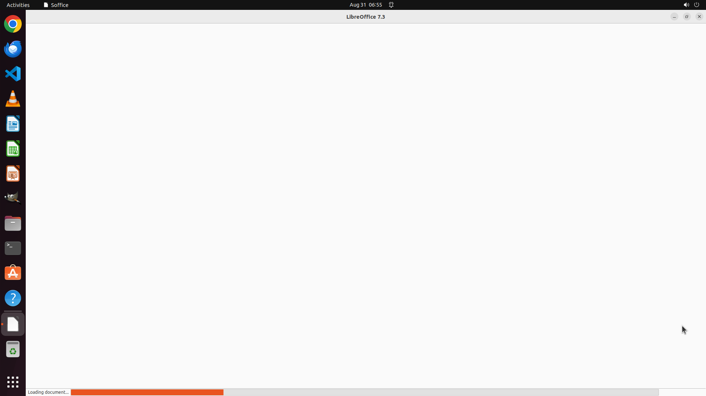
step 2 22:55:53
THINKINGThe document is loading in LibreOffice Writer. Rather than manually reading the whole document via screenshots, it would be more reliable to inspect the actual content. But the task is a document (odt) - likely a table or plain text lines. Let me wait for it to load and take a screenshot to understand the structure.
ACTIONLet me wait for it to fully load and see the content.
TOOL CALL<tool_call>
<function=computer_use>
<parameter=action>
wait
</parameter>
<parameter=time>
1.0
</parameter>
</function>
</tool_call>
EXECUTED (pyautogui in VM)WAIT
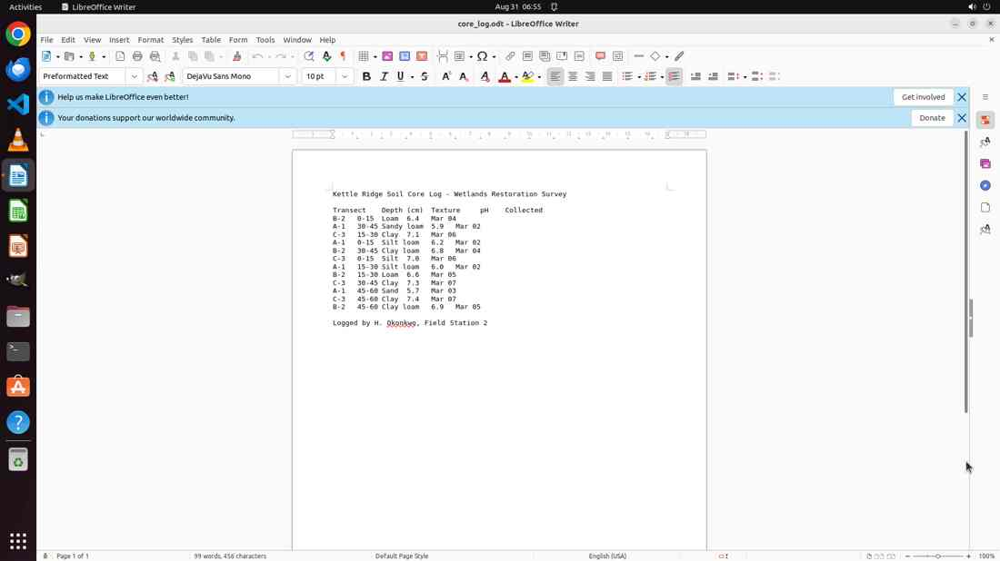
step 3 22:57:00
THINKINGNow I can see the content. Let me read it carefully:
Title: Kettle Ridge Soil Core Log - Wetlands Restoration Survey
Header: Transect Depth (cm) Texture pH Collected
Rows (as they appear):
1. B-2 0-15 Loam 6.4 Mar 04
2. A-1 30-45 Sandy loam 5.9 Mar 02
3. C-3 15-30 Clay 7.1 Mar 06
4. A-1 0-15 Silt loam 6.2 Mar 02
5. B-2 30-45 Clay loam 6.8 Mar 04
6. C-3 0-15 Silt 7.0 Mar 06
7. A-1 15-30 Silt loam 6.0 Mar 02
8. B-2 15-30 Loam 6.6 Mar 05
9. C-3 30-45 Clay 7.3 Mar 07
10. A-1 45-60 Sand 5.7 Mar 03
11. C-3 45-60 Clay 7.4 Mar 07
12. B-2 45-60 Clay loam 6.9 Mar 05
Footer: Logged by H. Okonkwo, Field Station 2
Now I need to group by transect alphabetically (A-1, B-2, C-3), and within each, sort by depth shallow to deep.
Transect A-1:
- 0-15 Silt loam 6.2 Mar 02
- 15-30 Silt loam 6.0 Mar 02
- 30-45 Sandy loam 5.9 Mar 02
- 45-60 Sand 5.7 Mar 03
Transect B-2:
- 0-15 Loam 6.4 Mar 04
- 15-30 Loam 6.6 Mar 05
- 30-45 Clay loam 6.8 Mar 04
- 45-60 Clay loam 6.9 Mar 05
Transect C-3:
- 0-15 Silt 7.0 Mar 06
- 15-30 Clay 7.1 Mar 06
- 30-45 Clay 7.3 Mar 07
- 45-60 Clay 7.4 Mar 07
I need to zoom in to confirm the values are exactly right. Let me zoom in first to be sure of the texture names and values. Let me take a closer look. Actually the text is small. Let me zoom in to verify precisely. I'll increase zoom via the zoom control or use Ctrl+scroll. Let me first verify by zooming.
Actually, rather than risk misreading, let me zoom in. I'll use the zoom slider. But it's easier to just increase via a keyboard. Actually let me just take careful reading. The values look clear enough but some could be ambiguous. Let me zoom to be safe - select the region or use View zoom.
I'll be careful. Let me verify by zooming in using Ctrl + scroll up on the document, or set zoom to like 150%. Let me click the zoom and set. Actually simpler: I'll re-type the whole body. My plan:
1. Select all the data rows (from first B-2 row to last B-2 row) and replace them with the sorted version.
The approach: I'll select the region between header line and the "Logged by" line, and replace. But precise selection is tricky.
Better approach: Click at start of first data row (before "B-2" at line y=277), then shift+click at end of last data row (after "Mar 05" at line y=393). Then type the new sorted content. This will replace the selection with typed text (each line as paragraph with the same Preformatted style, preserving column spacing).
Let me first zoom in to verify the exact data. I'll zoom to 150%.
ACTIONThe document is a monospaced core log. Let me zoom in to read the exact values precisely before editing.
TOOL CALL<tool_call>
<function=computer_use>
<parameter=action>
triple_click
</parameter>
<parameter=coordinate>
[122, 134]
</parameter>
</function>
</tool_call>
EXECUTED (pyautogui in VM)pyautogui.tripleClick(234, 144)
step 4 22:57:36
THINKINGMy triple-click hit the style box which I don't want. Let me zoom in to read the data precisely. I'll set zoom higher. Actually, rather than guess values from the small screenshot, the safest is to read the actual file content. But it's an odt. Let me use the terminal to convert the odt to text so I can read exact values. This is much more reliable than reading a low-res screenshot.
Let me open a terminal. There's a terminal icon in the dock. Actually, I should be careful about modifying the file with CLI - but I just want to READ it. Reading via terminal is safe. Let me open the terminal.
ACTIONLet me open a terminal to read the exact file contents reliably (read-only) before editing.
TOOL CALL<tool_call>
<function=computer_use>
<parameter=action>
left_click
</parameter>
<parameter=coordinate>
[17, 620]
</parameter>
</function>
</tool_call>
EXECUTED (pyautogui in VM)pyautogui.click(32, 670)
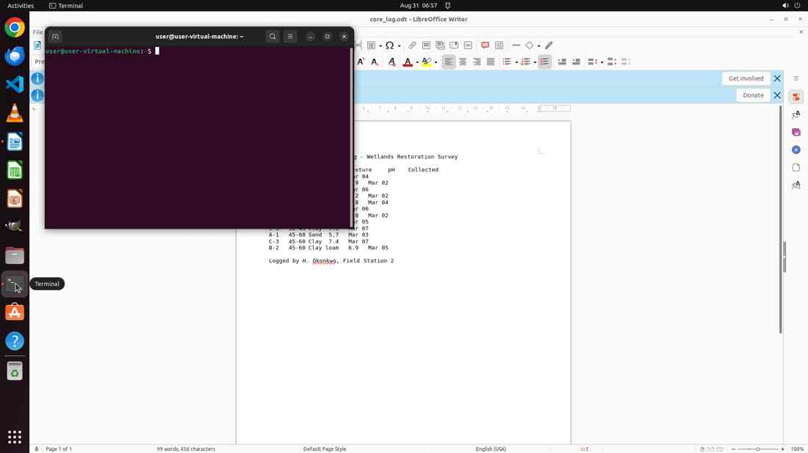
step 5 22:58:52
THINKINGTerminal is open. Let me convert the odt to plain text to read the exact content, preserving spacing. I'll use `odt2txt` if available, or python. Let me try a reliable method. I'll first check the file location - it's on Desktop. Let me use python3 with the odf? Simpler: use `soffice` is risky since already running. Let me try `odt2txt` or unzip + parse content.xml.
Best: use python with a quick approach. Actually `libreoffice --headless --convert-to txt` would conflict with the open instance. Let me instead just extract content.xml text. Simplest:
`unzip -p ~/Desktop/core_log.odt content.xml | sed 's/<[^>]*>/\n/g'` won't preserve spacing well but text runs will be separated.
Actually, to see exact spacing/tabs, I should look at the text with tabs. Let me use a python script reading odt via odfpy? May not be installed.
Let me try the simplest reliable read: use `odt2txt`. If not installed, fall back. Let me just run it and cat with visible whitespace.
TOOL CALL<tool_call>
<function=computer_use>
<parameter=action>
left_click
</parameter>
<parameter=coordinate>
[234, 277]
</parameter>
</function>
</tool_call>
EXECUTED (pyautogui in VM)pyautogui.click(449, 299)
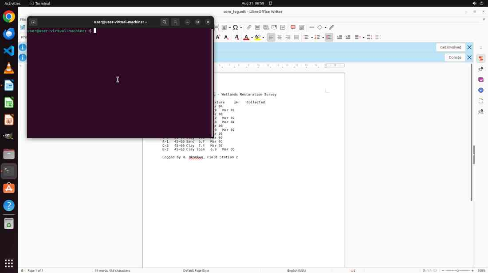
step 6 22:59:44
THINKINGLet me read the exact text. I'll extract content.xml text and show it with visible whitespace to understand columns (spaces vs tabs). I'll write a python one-liner that parses the odt to get paragraph text preserving whitespace.
Let me use python3. odt is a zip with content.xml. I'll parse with xml, collecting text per <text:p>, and show repr to see whitespace.
TOOL CALL<tool_call>
<function=computer_use>
<parameter=action>
type
</parameter>
<parameter=text>
cd ~/Desktop && python3 -c "
import zipfile,re
z=zipfile.ZipFile('core_log.odt')
x=z.read('content.xml').decode('utf-8')
paras=re.findall(r'<text:p[^>]*>(.*?)</text:p>',x,re.S)
for p in paras:
t=re.sub(r'<[^>]+>','',p)
t=t.replace('&','&')
print(repr(t))
"
</parameter>
</function>
</tool_call>
EXECUTED (pyautogui in VM)pyautogui.typewrite("cd ~/Desktop && python3 -c \"\nimport zipfile,re\nz=zipfile.ZipFile('core_log.odt')\nx=z.read('content.xml').decode('utf-8')\nparas=re.findall(r'<text:p[^>]*>(.*?)</text:p>',x,re.S)\nfor p in paras:\n t=re.sub(r'<[^>]+>','',p)\n t=t.replace('&','&')\n print(repr(t))\n\"")
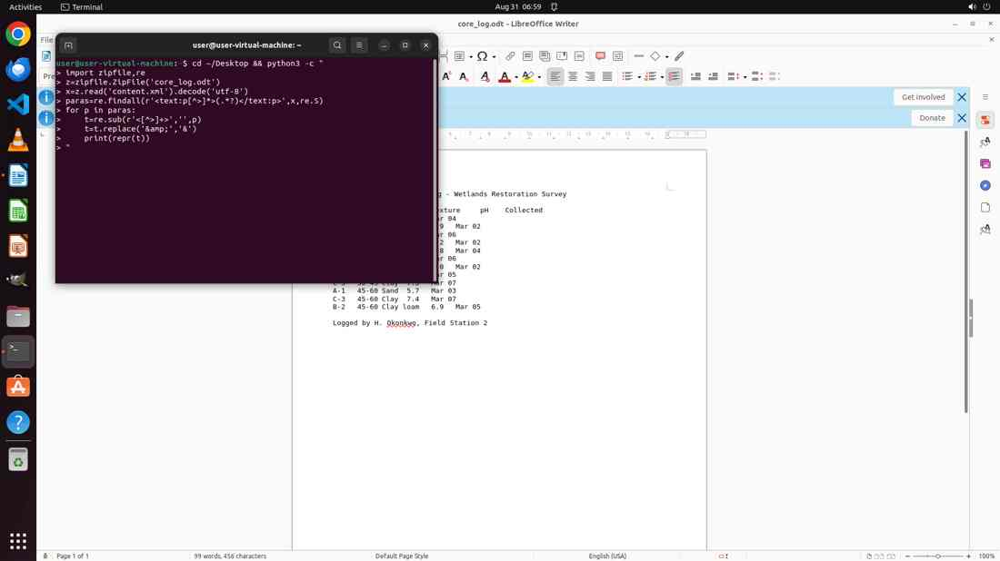
step 7 23:01:18
THINKINGThe command was typed but the multi-line with the closing quote may not have executed as expected (the terminal shows the lines but I see the prompt continuation `>`). The final line shows `> "` meaning the string is still open? Actually the last line shows `> ` with a `"` - it seems the shell is still in a continuation. Let me press Enter to execute.
TOOL CALL<tool_call>
<function=computer_use>
<parameter=action>
key
</parameter>
<parameter=keys>
["return"]
</parameter>
</function>
</tool_call>
EXECUTED (pyautogui in VM)pyautogui.press("return")
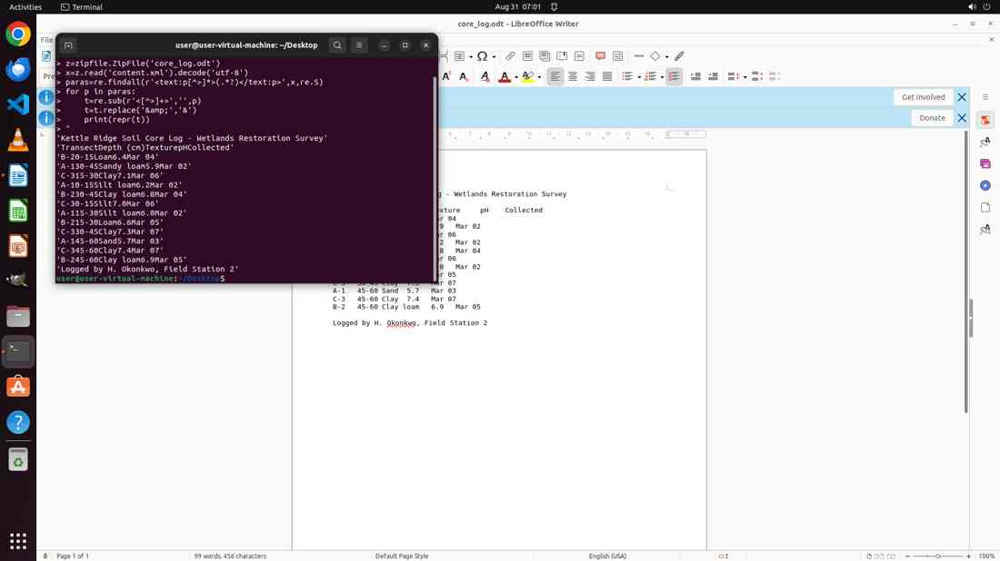
step 8 23:02:45
THINKINGNow I can read the exact content. The paragraphs:
1. 'Kettle Ridge Soil Core Log - Wetlands Restoration Survey'
2. 'TransectDepth (cm)TexturepHCollected' (header, columns joined - there are spaces in original; repr shows no explicit spaces between, but that's because my regex stripped? No, it kept spaces. Actually 'TransectDepth (cm)TexturepHCollected' has no spaces between words - meaning columns are separated by tabs or by <text:s> elements which my regex removed, OR the header uses spaces that got stripped. Wait the data rows also show no spaces: 'B-20-15Loam6.4Mar 04'. That means the original uses non-space separators (likely <text:s> spaces or tabs) that got removed by my tag-stripping.
Let me check: 'B-20-15Loam6.4Mar 04' — original row 1 was "B-2 0-15 Loam 6.4 Mar 04". The spaces between columns are missing here, but '6.4Mar 04' — wait there IS a space between 6.4 and Mar (in '6.4Mar 04'? no, it shows '6.4Mar 04' = "6.4Mar 04" — actually reading: 'B-20-15Loam6.4Mar 04'. Between 6.4 and Mar there's a space? "6.4Mar 04" - there's a space before Mar: "6.4Mar 04" hmm. Let me read carefully: `6.4Mar 04` — that's "6.4Mar" then space "04". So "Mar 04" has a space, meaning "Mar" and "04" are separate with a real space. But between 6.4 and Mar there is no space.
So the column separators are NOT regular spaces — they're tabs or repeated spaces encoded as <text:s/> which I stripped. The real spaces (like in "Mar 04", "Sandy loam", "Clay loam", "Silt loam") are preserved.
So the data rows use some whitespace (probably multiple spaces or tabs) between columns that got collapsed/removed. I need to know the exact separator to reproduce formatting. Let me look at the raw text:p XML for one data row to see the separator. Let me print the raw XML of the data paragraphs.
ACTIONThe column separators were stripped. Let me inspect the raw XML of the data lines to see exactly how columns are separated.
TOOL CALL<tool_call>
<function=computer_use>
<parameter=action>
type
</parameter>
<parameter=text>
python3 -c "
import zipfile,re
z=zipfile.ZipFile('core_log.odt')
x=z.read('content.xml').decode('utf-8')
paras=re.findall(r'<text:p[^>]*>.*?</text:p>',x,re.S)
for p in paras[2:5]:
print(p)
print('----')
"
</parameter>
</function>
</tool_call>
EXECUTED (pyautogui in VM)pyautogui.typewrite("python3 -c \"\nimport zipfile,re\nz=zipfile.ZipFile('core_log.odt')\nx=z.read('content.xml').decode('utf-8')\nparas=re.findall(r'<text:p[^>]*>.*?</text:p>',x,re.S)\nfor p in paras[2:5]:\n print(p)\n print('----')\n\"")
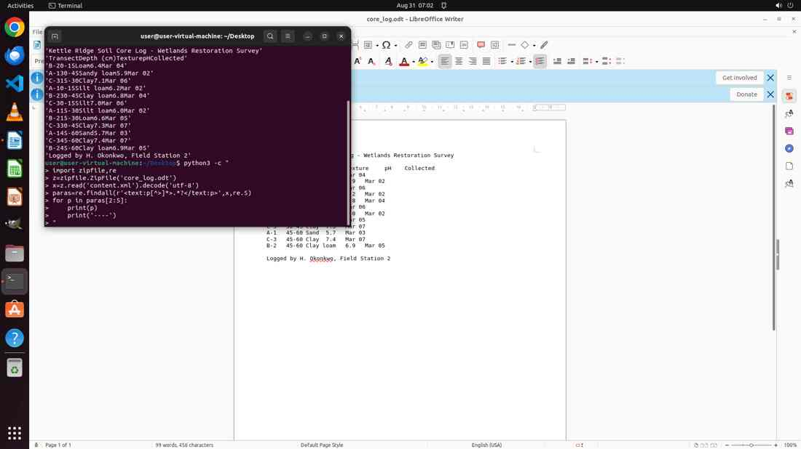
step 9 23:03:59
THINKINGNeed to press Enter to execute.
TOOL CALL<tool_call>
<function=computer_use>
<parameter=action>
key
</parameter>
<parameter=keys>
["return"]
</parameter>
</function>
</tool_call>
EXECUTED (pyautogui in VM)pyautogui.press("return")
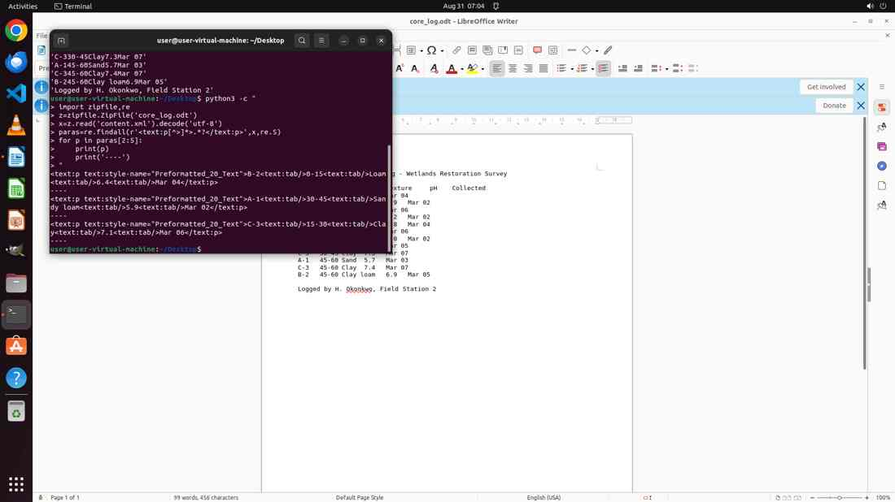
step 10 23:05:40
THINKINGNow I can see the exact structure. Each data paragraph uses TABs between columns:
Row: `<text:p text:style-name="Preformatted_20_Text">B-2<text:tab/>0-15<text:tab/>Loam<text:tab/>6.4<text:tab/>Mar 04</text:p>`
So structure: TRANSECT<TAB>DEPTH<TAB>TEXTURE<TAB>PH<TAB>COLLECTED
Note within a cell, spaces are real spaces (e.g. "Sandy loam", "Mar 04"). Columns separated by single tab.
Now I have full data. Let me list all 12 rows with their fields:
From the repr output:
1. B-2 | 0-15 | Loam | 6.4 | Mar 04
2. A-1 | 30-45 | Sandy loam | 5.9 | Mar 02
3. C-3 | 15-30 | Clay | 7.1 | Mar 06
4. A-1 | 0-15 | Silt loam | 6.2 | Mar 02
5. B-2 | 30-45 | Clay loam | 6.8 | Mar 04
6. C-3 | 0-15 | Silt | 7.0 | Mar 06
7. A-1 | 15-30 | Silt loam | 6.0 | Mar 02
8. B-2 | 15-30 | Loam | 6.6 | Mar 05
9. C-3 | 30-45 | Clay | 7.3 | Mar 07
10. A-1 | 45-60 | Sand | 5.7 | Mar 03
11. C-3 | 45-60 | Clay | 7.4 | Mar 07
12. B-2 | 45-60 | Clay loam | 6.9 | Mar 05
Now sort by transect (A-1, B-2, C-3) then by depth shallow to deep. Depth order: 0-15 < 15-30 < 30-45 < 45-60.
Transect A-1 (sort by depth):
- 0-15 | Silt loam | 6.2 | Mar 02
- 15-30 | Silt loam | 6.0 | Mar 02
- 30-45 | Sandy loam | 5.9 | Mar 02
- 45-60 | Sand | 5.7 | Mar 03
Transect B-2:
- 0-15 | Loam | 6.4 | Mar 04
- 15-30 | Loam | 6.6 | Mar 05
- 30-45 | Clay loam | 6.8 | Mar 04
- 45-60 | Clay loam | 6.9 | Mar 05
Transect C-3:
- 0-15 | Silt | 7.0 | Mar 06
- 15-30 | Clay | 7.1 | Mar 06
- 30-45 | Clay | 7.3 | Mar 07
- 45-60 | Clay | 7.4 | Mar 07
Now, the question is HOW to edit. The document is open in Writer. The instruction says "Save it in place" and the guidance says use the GUI, not macros/CLI for the actual task. But the guidance is about not using CLI as a workaround for app capabilities. Editing this is possible in the GUI but tedious and error-prone. However, the strong instruction is: "do NOT use LibreOffice macros" and "Always use the GUI interface directly". It says use designated application's native GUI.
Hmm. But sorting rows in a Writer document (plain text, not a real table) requires manually reordering lines. The cleanest reliable GUI approach: select each row and move it. That's a lot of clicks.
Alternative reliable GUI approach: Replace the entire data block text. Since each line is a separate paragraph, I can select all 12 data paragraphs and retype them in the correct order. When I type Tab, Writer inserts a tab (good, matches original format). Since the paragraph style is "Preformatted Text" (monospaced) and the selection's style carries, typing will keep the style. I just need to type: line, Enter, line, Enter... The last line should not add an extra empty paragraph — but the selection includes the full 12 lines ending before the "Logged by" line. If I select exactly the 12 lines including their paragraph marks appropriately and type 12 lines, the final Enter of the 12th could create issues.
Better plan: Select from the start of the first data line to the end of the 12th data line (not including the trailing newline/paragraph break before "Logged by"). Then type the 12 lines separated by Enter, with NO trailing Enter. This replaces the selection with a single paragraph containing... no, Enter creates new paragraphs. If selection spans 12 paragraphs, replacing with text that has 11 Enter keystrokes creates 12 paragraphs.
Let me think about selection boundaries. If I click at very start of "B-2" (line 1) and shift+click at end of "Mar 05" (line 12, the last char), the selection covers all 12 paragraphs including the paragraph breaks between them, but NOT the break after line 12. When I type: "A-1\t0-15\t...\tMar 02\n A-1...\n ..." where \n = Enter. After 12 lines with 11 Enters, the last line's text ends at cursor. This exactly replaces the 12 paragraphs.
So the typed text should be 12 lines with Enter between them (11 Enters total). Good.
But typing Tab in a "Preformatted Text" style — will Tab insert a <text:tab/>? In LibreOffice Writer, pressing Tab inserts a tab character (tab stop). In preformatted/monospace style it may insert a tab character or spaces. Either way it should visually align as the original did (original used real tabs). Actually original used <text:tab/> which is a real tab. Pressing Tab in Writer inserts a tab. Should be fine and consistent.
Concern: Autocorrect / autocomplete might alter text. E.g., "Loam" fine. Numbers fine. Should be OK. One risk: after typing a tab and then a number, nothing bad. I'll proceed.
Actually, a cleaner and less error-prone method given the risk of typing 12 lines with tabs: Since it's a simple reordering, I could instead move paragraphs. But that's also many steps and risky. The retype approach is deterministic if I type carefully. Let me go with retype.
However, there's a subtle risk: if the "Preformatted Text" style auto-converts or the font differs. But we keep same style. Fine.
Let me also double check: Are there leading spaces in the data paragraphs? The XML showed `>B-2<text:tab/>0-15...` — no leading space. Good.
Now, to be safe and precise with selection, I'll do it in the GUI:
1. Click in Writer window to focus.
2. Click at start of first data line "B-2" (the "B" at approximately x=425, y=277).
3. Actually to select whole lines reliably, I'll click at the beginning of "B-2" line, then Shift+click at the end of "Mar 05" on the last line.
Let me reconsider coordinates from the original screenshot (100% zoom, before I clicked style box). The document text:
- "B-2 0-15 Loam 6.4 Mar 04" at y≈277, "B" starts at x≈425
- last line "B-2 45-60 Clay loam 6.9 Mar 05" at y≈393, "Mar 05" ends at x≈617
I'll click at x=424, y=277 (just before B), then Shift+click at end of "Mar 05" x≈618, y=393.
But wait, will clicking slightly before the first char place cursor at line start? I'll use Home key to be safe: click anywhere on first data line, press Home to go to line start, then Shift+click end of last line (or Shift+Down then Shift+End).
More robust: Click on first data line, Home. Then Shift+click on the last data line, then Shift+End. That selects from start of line1 to end of line12.
Let me do that. First focus Writer by clicking on the document area (e.g., on the first data line).
Let me bring Writer to front by clicking on its window (the visible right portion). I'll click directly on the first data line in the document.
Coordinates: first data line "B-2 0-15..." is at y≈277. Let me click at x=450, y=277.
ACTIONI now have the exact data and structure (columns separated by tabs). The 12 rows, sorted by transect (A‑1, B‑2, C‑3) then by depth, are clear. I'll edit directly in the Writer GUI: select the 12 data lines and retype them in the correct order.
First, let me click into the document on the first data line and move to its start.
TOOL CALL<tool_call>
<function=computer_use>
<parameter=action>
left_click
</parameter>
<parameter=coordinate>
[351, 384]
</parameter>
</function>
</tool_call>
EXECUTED (pyautogui in VM)pyautogui.click(674, 415)
step 11 23:06:18
THINKINGThe terminal window is still on top and partially covering the document. My click at (450,277) landed inside the terminal window area, not the Writer document. The terminal occupies the left portion. I need to bring Writer to the front. Let me click on the Writer window's visible area (right side) to focus it. I'll click on the title bar of Writer or on the document area at x=640, y=300.
Actually the terminal window is a floating window. Let me minimize it or move it. I'll click on the Writer title bar at top (708,30) to bring it to front.
ACTIONThe terminal is still covering the document. Let me bring Writer to the front by clicking its title bar.
TOOL CALL<tool_call>
<function=computer_use>
<parameter=action>
left_click
</parameter>
<parameter=coordinate>
[552, 41]
</parameter>
</function>
</tool_call>
EXECUTED (pyautogui in VM)pyautogui.click(1060, 44)
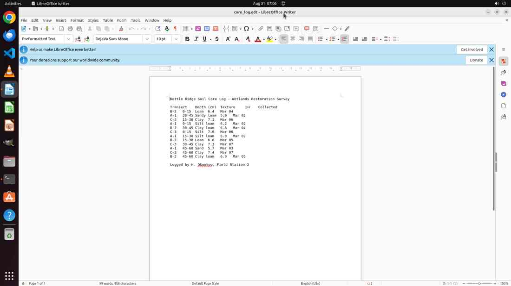
step 12 23:07:17
THINKINGWriter is now in front. Now I can see the data rows clearly:
Line1 y=277: B-2 0-15 Loam 6.4 Mar 04
Line2 y=289: A-1 30-45 Sandy loam 5.9 Mar 02
Line3 y=301: C-3 15-30 Clay 7.1 Mar 06
Line4 y=313: A-1 0-15 Silt loam 6.2 Mar 02
Line5 y=325: B-2 30-45 Clay loam 6.8 Mar 04
Line6 y=337: C-3 0-15 Silt 7.0 Mar 06
Line7 y=349: A-1 15-30 Silt loam 6.0 Mar 02
Line8 y=361: B-2 15-30 Loam 6.6 Mar 05
Line9 y=373: C-3 30-45 Clay 7.3 Mar 07
Line10 y=385: A-1 45-60 Sand 5.7 Mar 03
Line11 y=397: C-3 45-60 Clay 7.4 Mar 07
Line12 y=409: B-2 45-60 Clay loam 6.9 Mar 05
Footer y=414: Logged by H. Okonkwo, Field Station 2
Wait, this is different from what I read from the repr earlier? Let me cross-check with the repr output from the earlier screenshot:
repr lines:
'B-20-15Loam6.4Mar 04' -> B-2 | 0-15 | Loam | 6.4 | Mar 04 ✓
'A-130-45Sandy loam5.9Mar 02' -> A-1 | 30-45 | Sandy loam | 5.9 | Mar 02 ✓
'C-315-30Clay7.1Mar 06' -> C-3 | 15-30 | Clay | 7.1 | Mar 06 ✓
'A-10-15Silt loam6.2Mar 02' -> A-1 | 0-15 | Silt loam | 6.2 | Mar 02 ✓
'B-230-45Clay loam6.8Mar 04' -> B-2 | 30-45 | Clay loam | 6.8 | Mar 04 ✓
'C-30-15Silt7.0Mar 06' -> C-3 | 0-15 | Silt | 7.0 | Mar 06 ✓
'A-115-30Silt loam6.0Mar 02' -> A-1 | 15-30 | Silt loam | 6.0 | Mar 02 ✓
'B-215-30Loam6.6Mar 05' -> B-2 | 15-30 | Loam | 6.6 | Mar 05 ✓
'C-330-45Clay7.3Mar 07' -> C-3 | 30-45 | Clay | 7.3 | Mar 07 ✓
'A-145-60Sand5.7Mar 03' -> A-1 | 45-60 | Sand | 5.7 | Mar 03 ✓
'C-345-60Clay7.4Mar 07' -> C-3 | 45-60 | Clay | 7.4 | Mar 07 ✓
'B-245-60Clay loam6.9Mar 05' -> B-2 | 45-60 | Clay loam | 6.9 | Mar 05 ✓
Great, matches. My earlier reading of the on-screen display had slight discrepancies (I earlier misread line5/6/7 order) but the repr is authoritative and matches the screen now.
Now sorted result:
A-1 block:
A-1 0-15 Silt loam 6.2 Mar 02
A-1 15-30 Silt loam 6.0 Mar 02
A-1 30-45 Sandy loam 5.9 Mar 02
A-1 45-60 Sand 5.7 Mar 03
B-2 block:
B-2 0-15 Loam 6.4 Mar 04
B-2 15-30 Loam 6.6 Mar 05
B-2 30-45 Clay loam 6.8 Mar 04
B-2 45-60 Clay loam 6.9 Mar 05
C-3 block:
C-3 0-15 Silt 7.0 Mar 06
C-3 15-30 Clay 7.1 Mar 06
C-3 30-45 Clay 7.3 Mar 07
C-3 45-60 Clay 7.4 Mar 07
Now, I'll select the 12 data lines and retype. I must type Tab between columns (to match original <text:tab/>). But in "Preformatted Text" style, pressing Tab inserts a tab. Good.
Plan of selection:
1. Click on first data line (line1 y=277), then press Home to ensure cursor at start of that line.
2. Shift+click on last data line (line12 y=409), then Shift+End to select through end of that line.
Then type the 12 lines. I'll type each line with Tab separators, and Enter between lines. 11 Enters total, no trailing Enter.
Let me be careful with the `type` action containing tabs and newlines. The `type` action types the literal string. If I include "\t" and "\n" as actual tab and newline characters in the text, they should be typed. Let me construct the text with real tabs and newlines.
Text (with \t as tab and \n as newline):
A-1\t0-15\tSilt loam\t6.2\tMar 02\n
A-1\t15-30\tSilt loam\t6.0\tMar 02\n
A-1\t30-45\tSandy loam\t5.9\tMar 02\n
A-1\t45-60\tSand\t5.7\tMar 03\n
B-2\t0-15\tLoam\t6.4\tMar 04\n
B-2\t15-30\tLoam\t6.6\tMar 05\n
B-2\t30-45\tClay loam\t6.8\tMar 04\n
B-2\t45-60\tClay loam\t6.9\tMar 05\n
C-3\t0-15\tSilt\t7.0\tMar 06\n
C-3\t15-30\tClay\t7.1\tMar 06\n
C-3\t30-45\tClay\t7.3\tMar 07\n
C-3\t45-60\tClay\t7.4\tMar 07
Wait — one concern: the header uses single tab but original data rows also single tab. However, looking at the original XML: `B-2<text:tab/>0-15<text:tab/>Loam<text:tab/>6.4<text:tab/>Mar 04` — single tabs. Good.
But another concern: When I type into the selected region, does the first typed character replace the selection and continue in the first paragraph's style? Yes. And each Enter creates a new paragraph inheriting the same style. Good.
However, there's a subtlety: "Preformatted Text" style might have autocorrect off, but let me consider autocapitalize. Typing "Silt loam" — fine. No issues.
Another concern: the number "6.0" — fine. "0-15" fine.
One risk: LibreOffice autocorrect might change straight quotes (none here) or capitalize first letter of sentence after tab. There's a "Capitalize first letter of every sentence" option, but tab/newline... The first word "A-1" already capitalized. After a tab, "Silt" already capitalized. "Clay loam" — "Clay" is mid-line after tab; autocapitalize usually only triggers after sentence-ending punctuation + space, not tab. Should be fine.
Actually to be safe against autocorrect messing things, the words are already correctly cased, so even if it triggers it won't change anything (e.g., it capitalizes "silt"->"Silt" which is what I want anyway; "loam" after space within a cell — I type "loam" lowercase, and autocorrect won't capitalize mid-word-after-space unless it thinks sentence). Should be fine.
Let me first do the selection. Click line1, Home. Then Shift+click line12 end area, then Shift+End.
Actually simpler and robust: Click at start of line1 (I'll click precisely before "B-2"). The "B" of line1 is at x≈425, y=277. Let me click at x=425,y=277 then Home.
Then Shift+Down 11 times to select 11 more lines (lines 2-12), then Shift+End to extend to end of line12. That selects all 12 lines fully including inter-line breaks, ending at end of line12. This is clean and avoids imprecise clicking.
So:
- left_click (425,277)
- key Home
- key: shift+Down x11
- key shift+End
Let me batch: click, Home, then 11x shift+Down, shift+End. Then take screenshot to verify selection before typing.
ACTIONWriter is in front and I can read all rows clearly, matching the file content. I'll now select all 12 data lines: click the first line, go to its start, then extend the selection down 11 lines to the end of the last line.
TOOL CALL<tool_call>
<function=computer_use>
<parameter=action>
left_click
</parameter>
<parameter=coordinate>
[359, 384]
</parameter>
</function>
</tool_call>
EXECUTED (pyautogui in VM)pyautogui.click(689, 415)
step 13 23:07:59
THINKINGCursor is now on the first data line (I see cursor near "0-15"). Let me press Home to go to line start, then extend selection down 11 lines and to end of last line. I'll batch: Home, then 11x shift+Down, then shift+End.
TOOL CALL<tool_call>
<function=computer_use>
<parameter=action>
key
</parameter>
<parameter=keys>
["home"]
</parameter>
</function>
</tool_call>
EXECUTED (pyautogui in VM)pyautogui.press("home")
step 14 23:08:51
THINKINGNow cursor at start of first data line. Let me extend selection down 11 lines and to end of last line. I'll do 11 shift+Down then shift+End, then screenshot to verify the selection covers exactly the 12 data lines.
ACTIONNow I'll extend the selection down through all 12 data lines to the end of the last one.
TOOL CALL<tool_call>
<function=computer_use>
<parameter=action>
key
</parameter>
<parameter=keys>
["shift", "down"]
</parameter>
</function>
</tool_call>
EXECUTED (pyautogui in VM)pyautogui.hotkey("shift", "down")
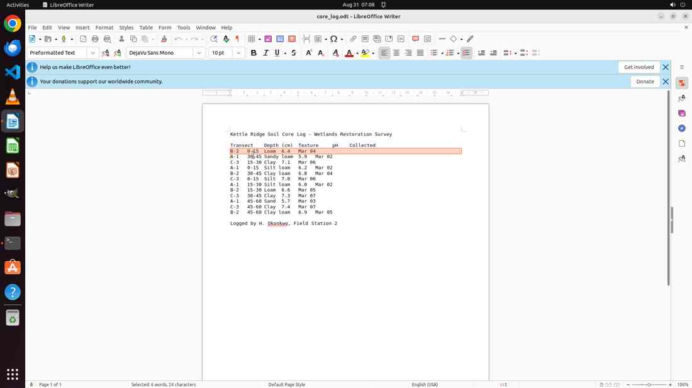
step 15 23:09:44
THINKINGSelection now covers the first line fully (through the paragraph break into line 2 start). "Selected: 6 words, 24 characters". The highlight covers line 1 to start of line 2. I need to select through line 12's end. I've done 1 shift+Down. I need 10 more shift+Down to reach start of line 13 (which is the blank line before "Logged by"? Actually after line 12 there's the "Logged by" line, no blank line between? Looking at layout, there IS a blank line between line12 (y=393) and "Logged by" (y=414). Let me check: line12 y=393, next visible text "Logged by" at y=414. There's a gap suggesting a blank paragraph.
So paragraphs: line1..line12, then possibly a blank line, then "Logged by". If I do 11 shift+Down total from start of line1, I'd be at start of line12+1 = the blank line (if blank exists) or start of "Logged by". Then shift+End would extend to end of that line — which is wrong; I'd over-select into the blank/Logged line.
I want selection to END at end of line12. So: from start of line1, I need to move down 11 lines (to start of line12) then shift+End. Wait: line1 start -> after 1 shift+Down I'm at start of line2. After 11 shift+Down I'm at start of line12. Then shift+End selects rest of line12. That gives selection = line1..line12 exactly.
So total shift+Down = 11 (to reach start of line12), NOT 12. I've done 1. Need 10 more, then shift+End.
Let me do 10 more shift+Down then shift+End.
ACTIONThe first line is selected. I need 10 more line-downs to reach the start of line 12, then to its end.
TOOL CALL<tool_call>
<function=computer_use>
<parameter=action>
key
</parameter>
<parameter=keys>
["shift", "down"]
</parameter>
</function>
</tool_call>
EXECUTED (pyautogui in VM)pyautogui.hotkey("shift", "down")
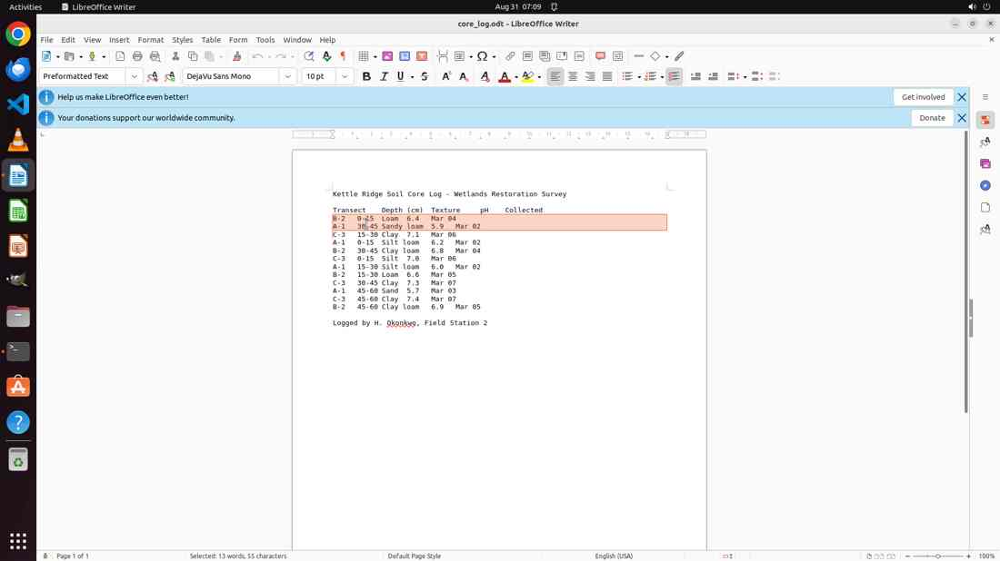
step 16 23:10:25
THINKINGNow selection covers line1 and line2 (highlight ends at start of line3). So I'm at start of line3 now. I've done 2 shift+Down total. I need to reach start of line12 = 11 shift+Down total. So 9 more, then shift+End. Let me do 9 more shift+Down in one batch, then shift+End, then screenshot.
ACTIONNow at start of line 3. I'll do the remaining 9 line-downs to reach line 12's start, then extend to its end.
TOOL CALL<tool_call>
<function=computer_use>
<parameter=action>
key
</parameter>
<parameter=keys>
["shift", "down"]
</parameter>
</function>
</tool_call>
EXECUTED (pyautogui in VM)pyautogui.hotkey("shift", "down")
step 17 23:10:56
THINKINGNow at start of line4 (selection ends at start of line4 "A-1 0-15 Silt loam"). Total 3 shift+Down done. I need to reach start of line12 = 11 total. So 8 more shift+Down, then shift+End. Let me batch the remaining 8 shift+Down plus shift+End, then screenshot to confirm the selection ends exactly at end of line12.
ACTIONNow at line 4. I'll complete the remaining line-downs to line 12 and extend to its end, then verify.
TOOL CALL<tool_call>
<function=computer_use>
<parameter=action>
key
</parameter>
<parameter=keys>
["shift", "down"]
</parameter>
</function>
</tool_call>
EXECUTED (pyautogui in VM)pyautogui.hotkey("shift", "down")
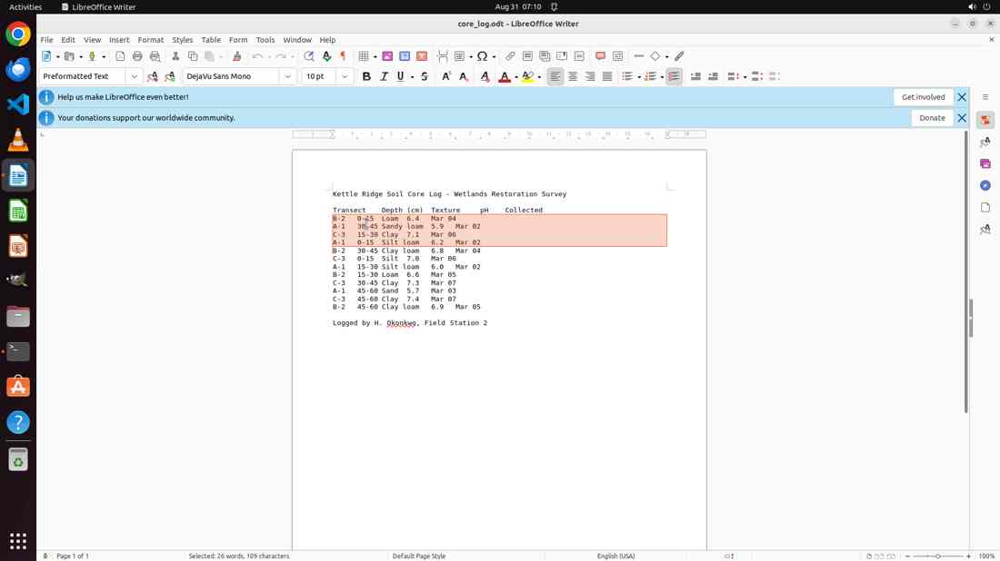
step 18 23:11:38
THINKINGNow at start of line5 (selection ends at start of "B-2 30-45 Clay loam 6.8 Mar 04"). That's 4 shift+Down total. I need start of line12 = 11 total, so 7 more shift+Down, then shift+End. Let me batch 7 shift+Down + shift+End, then verify.
ACTIONAt line 5 now. I'll finish the remaining line-downs to line 12 and extend to its end.
TOOL CALL<tool_call>
<function=computer_use>
<parameter=action>
key
</parameter>
<parameter=keys>
["shift", "down"]
</parameter>
</function>
</tool_call>
EXECUTED (pyautogui in VM)pyautogui.hotkey("shift", "down")
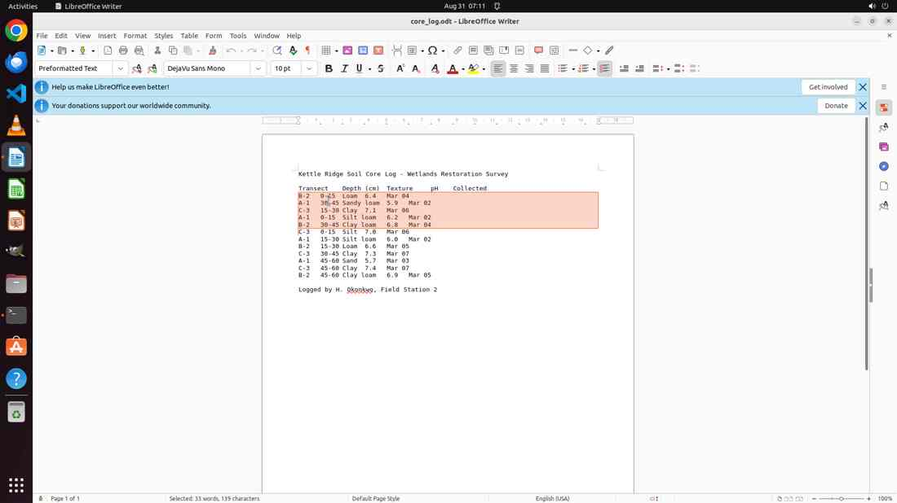
step 19 23:12:27
THINKINGNow selection ends at start of line6 "C-3 0-15 Silt 7.0 Mar 06". So 5 shift+Down total. I need start of line12 = 11 total. 6 more shift+Down, then shift+End. Let me batch the 6 remaining shift+Down plus shift+End and then verify.
ACTIONAt line 6. Now I'll do the final 6 line-downs to reach line 12, extend to its end, and verify.
TOOL CALL<tool_call>
<function=computer_use>
<parameter=action>
key
</parameter>
<parameter=keys>
["shift", "down"]
</parameter>
</function>
</tool_call>
EXECUTED (pyautogui in VM)pyautogui.hotkey("shift", "down")
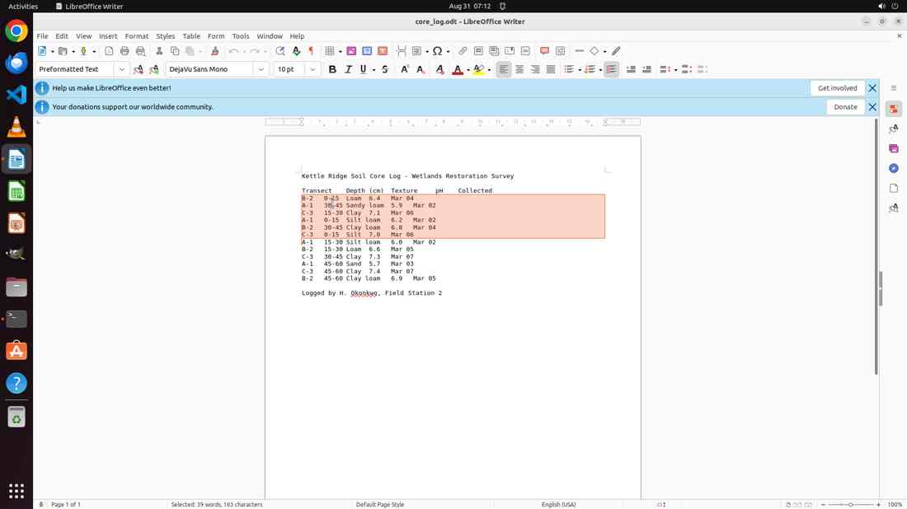
step 20 23:13:27
THINKINGNow selection ends at start of line7 "A-1 15-30 Silt loam 6.0 Mar 02". That's 6 shift+Down total. I need start of line12 = 11 total. 5 more shift+Down, then shift+End. Let me do the 5 remaining in one batch, plus shift+End, then verify.
ACTIONAt line 7. Now the final 5 line-downs to reach line 12, then extend to its end.
TOOL CALL<tool_call>
<function=computer_use>
<parameter=action>
key
</parameter>
<parameter=keys>
["shift", "down"]
</parameter>
</function>
</tool_call>
EXECUTED (pyautogui in VM)pyautogui.hotkey("shift", "down")
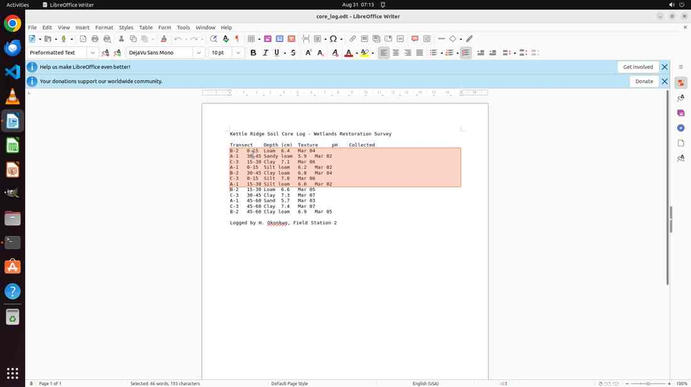
step 21 23:14:33
THINKINGNow selection ends at start of line8 "B-2 15-30 Loam 6.6 Mar 05". That's 7 shift+Down total. I need start of line12 = 11 total, so 4 more shift+Down, then shift+End. Let me do the 4 remaining shift+Down, then shift+End, and verify.
ACTIONAt line 8. Now 4 more line-downs to reach line 12, then extend to its end, and verify the selection.
TOOL CALL<tool_call>
<function=computer_use>
<parameter=action>
key
</parameter>
<parameter=keys>
["shift", "down"]
</parameter>
</function>
</tool_call>
EXECUTED (pyautogui in VM)pyautogui.hotkey("shift", "down")
step 22 23:14:56
THINKINGNow selection ends at start of line9 "C-3 30-45 Clay 7.3 Mar 07". That's 8 shift+Down total. I need start of line12 = 11 total, so 3 more shift+Down, then shift+End. Let me do 3 more shift+Down then shift+End, then verify selection ends exactly at end of line12 ("B-2 45-60 Clay loam 6.9 Mar 05").
ACTIONAt line 9. Now 3 more line-downs to reach line 12, then extend to its end.
TOOL CALL<tool_call>
<function=computer_use>
<parameter=action>
key
</parameter>
<parameter=keys>
["shift", "down"]
</parameter>
</function>
</tool_call>
EXECUTED (pyautogui in VM)pyautogui.hotkey("shift", "down")
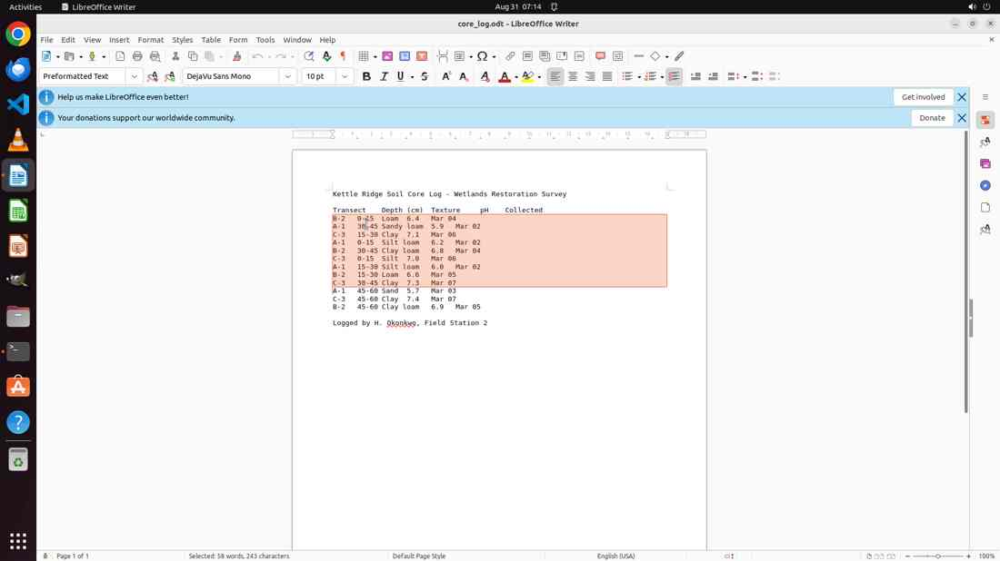
step 23 23:15:58
THINKINGNow selection ends at start of line10 "A-1 45-60 Sand 5.7 Mar 03". That's 9 shift+Down total. I need start of line12 = 11 total, so 2 more shift+Down, then shift+End. Let me do 2 more shift+Down then shift+End, and verify the selection ends at end of line12 ("B-2 45-60 Clay loam 6.9 Mar 05").
ACTIONAt line 10. Now 2 more line-downs to reach line 12, then extend to its end, and verify.
TOOL CALL<tool_call>
<function=computer_use>
<parameter=action>
key
</parameter>
<parameter=keys>
["shift", "down"]
</parameter>
</function>
</tool_call>
EXECUTED (pyautogui in VM)pyautogui.hotkey("shift", "down")
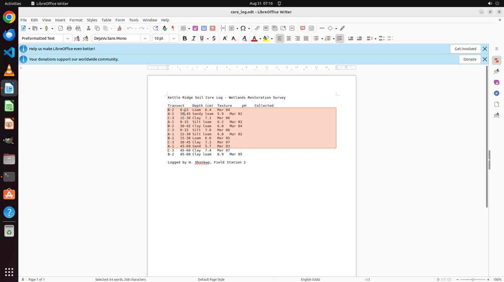
step 24 23:16:50
THINKINGNow selection ends at start of line11 "C-3 45-60 Clay 7.4 Mar 07". That's 10 shift+Down total. I need start of line12 = 11 total, so 1 more shift+Down, then shift+End. After that the selection will end at end of line12 "B-2 45-60 Clay loam 6.9 Mar 05". Let me do 1 shift+Down then shift+End, then verify.
ACTIONAt line 11. One more line-down to reach line 12, then extend to its end.
TOOL CALL<tool_call>
<function=computer_use>
<parameter=action>
key
</parameter>
<parameter=keys>
["shift", "down"]
</parameter>
</function>
</tool_call>
EXECUTED (pyautogui in VM)pyautogui.hotkey("shift", "down")
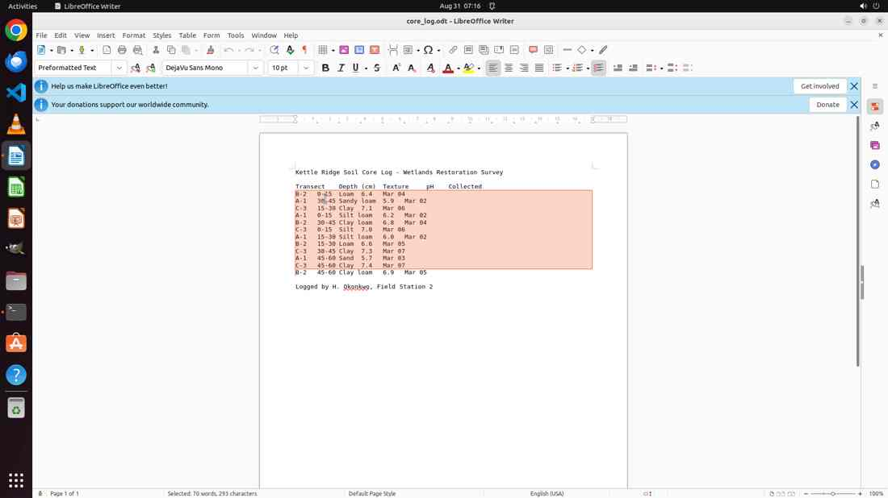
step 25 23:17:42
THINKINGNow selection ends at start of line12 "B-2 45-60 Clay loam 6.9 Mar 05" (the last data line, currently not highlighted). That's 11 shift+Down total. Now I press shift+End to extend selection to the end of line12. This should fully highlight all 12 data lines. Let me do shift+End and verify.
ACTIONNow at the start of line 12. I'll extend the selection to the end of that line.
TOOL CALL<tool_call>
<function=computer_use>
<parameter=action>
key
</parameter>
<parameter=keys>
["shift", "end"]
</parameter>
</function>
</tool_call>
EXECUTED (pyautogui in VM)pyautogui.hotkey("shift", "end")
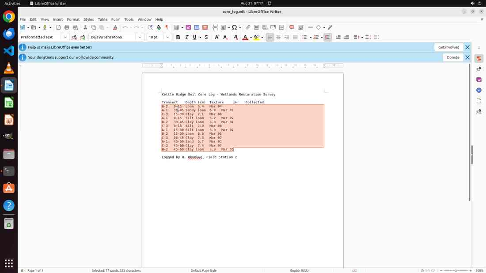
step 26 23:18:46
THINKINGNow all 12 data lines are fully highlighted, ending exactly at end of "B-2 45-60 Clay loam 6.9 Mar 05" (last char "5" at ~x=617). The "Logged by" line below is not selected.
Now I'll type the sorted content. The selection will be replaced. I'll type 12 lines with tabs between columns and Enter between lines. No trailing Enter.
I need to make sure Tab inserts a tab. In "Preformatted Text" style, pressing Tab should insert a tab. Let me type the full block.
Concern about autocorrect: To be safe against autocorrect capitalizing/altering, I'll just type normally. Words are fine.
Let me construct the type text with actual tab (\t) and newline (\n) characters:
A-1\t0-15\tSilt loam\t6.2\tMar 02
A-1\t15-30\tSilt loam\t6.0\tMar 02
A-1\t30-45\tSandy loam\t5.9\tMar 02
A-1\t45-60\tSand\t5.7\tMar 03
B-2\t0-15\tLoam\t6.4\tMar 04
B-2\t15-30\tLoam\t6.6\tMar 05
B-2\t30-45\tClay loam\t6.8\tMar 04
B-2\t45-60\tClay loam\t6.9\tMar 05
C-3\t0-15\tSilt\t7.0\tMar 06
C-3\t15-30\tClay\t7.1\tMar 06
C-3\t30-45\tClay\t7.3\tMar 07
C-3\t45-60\tClay\t7.4\tMar 07
I'll type this as a single type action with real tabs and newlines. In the type parameter, I'll embed actual tab and newline characters.
One concern: pressing Enter mid-type in "Preformatted Text" style — does it create a new paragraph with same style? Yes. And the replaced selection collapses into first paragraph which has "Preformatted Text" style, so subsequent lines inherit it. Good.
Let me type it.
ACTIONAll 12 data lines are selected, ending exactly at the last line with the "Logged by" line untouched. Now I'll type the sorted data (transects A‑1, B‑2, C‑3, each in shallow‑to‑deep depth order), using tabs to keep the column layout.
TOOL CALL<tool_call>
<function=computer_use>
<parameter=action>
type
</parameter>
<parameter=text>
A-1 0-15 Silt loam 6.2 Mar 02
A-1 15-30 Silt loam 6.0 Mar 02
A-1 30-45 Sandy loam 5.9 Mar 02
A-1 45-60 Sand 5.7 Mar 03
B-2 0-15 Loam 6.4 Mar 04
B-2 15-30 Loam 6.6 Mar 05
B-2 30-45 Clay loam 6.8 Mar 04
B-2 45-60 Clay loam 6.9 Mar 05
C-3 0-15 Silt 7.0 Mar 06
C-3 15-30 Clay 7.1 Mar 06
C-3 30-45 Clay 7.3 Mar 07
C-3 45-60 Clay 7.4 Mar 07
</parameter>
</function>
</tool_call>
EXECUTED (pyautogui in VM)pyautogui.typewrite("A-1\t0-15\tSilt loam\t6.2\tMar 02\nA-1\t15-30\tSilt loam\t6.0\tMar 02\nA-1\t30-45\tSandy loam\t5.9\tMar 02\nA-1\t45-60\tSand\t5.7\tMar 03\nB-2\t0-15\tLoam\t6.4\tMar 04\nB-2\t15-30\tLoam\t6.6\tMar 05\nB-2\t30-45\tClay loam\t6.8\tMar 04\nB-2\t45-60\tClay loam\t6.9\tMar 05\nC-3\t0-15\tSilt\t7.0\tMar 06\nC-3\t15-30\tClay\t7.1\tMar 06\nC-3\t30-45\tClay\t7.3\tMar 07\nC-3\t45-60\tClay\t7.4\tMar 07")
step 27 23:19:58
THINKINGThe replacement worked. The document now shows:
A-1 0-15 Silt loam 6.2 Mar 02
A-1 15-30 Silt loam 6.0 Mar 02
A-1 30-45 Sandy loam 5.9 Mar 02
A-1 45-60 Sand 5.7 Mar 03
B-2 0-15 Loam 6.4 Mar 04
B-2 15-30 Loam 6.6 Mar 05
B-2 30-45 Clay loam 6.8 Mar 04
B-2 45-60 Clay loam 6.9 Mar 05
C-3 0-15 Silt 7.0 Mar 06
C-3 15-30 Clay 7.1 Mar 06
C-3 30-45 Clay 7.3 Mar 07
C-3 45-60 Clay 7.4 Mar 07
Logged by H. Okonkwo, Field Station 2
The alignment looks consistent (columns aligned by tabs). The order is exactly correct: grouped by transect alphabetically, depth shallow to deep within each. 12 data rows preserved. No extra blank line.
Now I should save in place. The file is .odt, so Ctrl+S will keep ODF format (may prompt "Keep Current Format"). Let me press Ctrl+S and handle the dialog by clicking "Use ODF Format!" / "Keep Current Format".
ACTIONThe data is now correctly regrouped: A‑1, B‑2, C‑3 in alphabetical order, each with depths in shallow‑to‑deep order, all 12 rows preserved and columns aligned. Now I'll save it in place, keeping the ODT format.
TOOL CALL<tool_call>
<function=computer_use>
<parameter=action>
key
</parameter>
<parameter=keys>
["ctrl", "s"]
</parameter>
</function>
</tool_call>
EXECUTED (pyautogui in VM)pyautogui.hotkey("ctrl", "s")
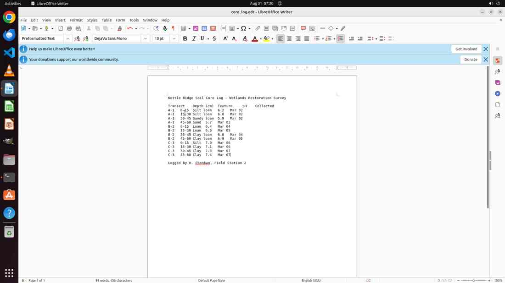
step 28 23:20:43
THINKINGNo format dialog appeared - it may have saved directly, or the dialog is about to appear. The screenshot shows no dialog. Sometimes the "Keep format" dialog appears after a brief moment. Let me wait and screenshot to check if a dialog appears.
ACTIONThe save dialog for format may appear momentarily. Let me check.
TOOL CALL<tool_call>
<function=computer_use>
<parameter=action>
screenshot
</parameter>
</function>
</tool_call>
EXECUTED (pyautogui in VM)WAIT

step 29 23:21:35
THINKINGNo format dialog appeared, and no "modified" indicator. The document was saved in ODT format in place (the "Keep format" prompt is disabled or it saved directly). Let me verify the save actually persisted by re-reading the file from the terminal to confirm the new ordering is on disk.
Let me switch to the terminal and re-run the python read to confirm the saved content.
ACTIONNo format prompt appeared, so it saved directly in ODF. Let me verify the saved file on disk reflects the new ordering by re-reading it in the terminal.
TOOL CALL<tool_call>
<function=computer_use>
<parameter=action>
left_click
</parameter>
<parameter=coordinate>
[17, 620]
</parameter>
</function>
</tool_call>
EXECUTED (pyautogui in VM)pyautogui.click(32, 670)
step 30 23:22:08
THINKINGThe terminal is showing the OLD output from before (the earlier python runs). I need to re-run the read on the freshly saved file to confirm. Let me run the full list print again to see the saved order. I'll run the same command that prints all paragraphs.
ACTIONThis is the earlier output. Let me re-run the read on the freshly saved file to confirm the persisted ordering.
TOOL CALL<tool_call>
<function=computer_use>
<parameter=action>
left_click
</parameter>
<parameter=coordinate>
[234, 416]
</parameter>
</function>
</tool_call>
EXECUTED (pyautogui in VM)pyautogui.click(449, 449)
step 31 23:23:15
THINKINGThe terminal is focused with a prompt. Let me run the full list read of all paragraphs to confirm the saved order.
TOOL CALL<tool_call>
<function=computer_use>
<parameter=action>
type
</parameter>
<parameter=text>
python3 -c "
import zipfile,re
x=zipfile.ZipFile('core_log.odt').read('content.xml').decode()
for p in re.findall(r'<text:p[^>]*>(.*?)</text:p>',x,re.S):
t=re.sub(r'<text:tab/>','\t',p); t=re.sub(r'<[^>]+>','',t)
print(repr(t))
"
</parameter>
</function>
</tool_call>
EXECUTED (pyautogui in VM)pyautogui.typewrite("python3 -c \"\nimport zipfile,re\nx=zipfile.ZipFile('core_log.odt').read('content.xml').decode()\nfor p in re.findall(r'<text:p[^>]*>(.*?)</text:p>',x,re.S):\n t=re.sub(r'<text:tab/>','\\t',p); t=re.sub(r'<[^>]+>','',t)\n print(repr(t))\n\"")
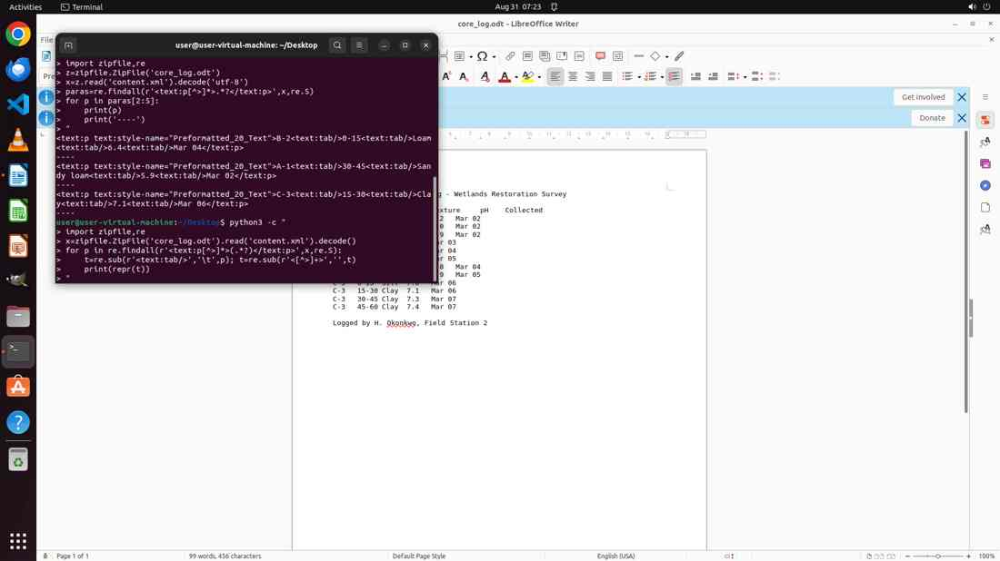
step 32 23:24:09
THINKINGThe command is typed with a multi-line string that is still open (the closing `"` on the last line `> "`). I need to press Enter to execute.
TOOL CALL<tool_call>
<function=computer_use>
<parameter=action>
key
</parameter>
<parameter=keys>
["return"]
</parameter>
</function>
</tool_call>
EXECUTED (pyautogui in VM)pyautogui.press("return")
step 33 23:25:08
THINKINGThe saved file on disk now shows the correct, sorted order with tab separators preserved:
- 'Kettle Ridge Soil Core Log - Wetlands Restoration Survey'
- 'Transect\tDepth (cm)\tTexture\tpH\tCollected'
- 'A-1\t0-15\tSilt loam\t6.2\tMar 02'
- 'A-1\t15-30\tSilt loam\t6.0\tMar 02'
- 'A-1\t30-45\tSandy loam\t5.9\tMar 02'
- 'A-1\t45-60\tSand\t5.7\tMar 03'
- 'B-2\t0-15\tLoam\t6.4\tMar 04'
- 'B-2\t15-30\tLoam\t6.6\tMar 05'
- 'B-2\t30-45\tClay loam\t6.8\tMar 04'
- 'B-2\t45-60\tClay loam\t6.9\tMar 05'
- 'C-3\t0-15\tSilt\t7.0\tMar 06'
- 'C-3\t15-30\tClay\t7.1\tMar 06'
- 'C-3\t30-45\tClay\t7.3\tMar 07'
- 'C-3\t45-60\tClay\t7.4\tMar 07'
- 'Logged by H. Okonkwo, Field Station 2'
This confirms:
- Transects grouped alphabetically: A-1, B-2, C-3 ✓
- Within each transect, depth shallow to deep: 0-15, 15-30, 30-45, 45-60 ✓
- All 12 rows preserved, no data lost ✓
- Header and footer untouched ✓
- Tabs preserved for column alignment ✓
- Saved in place (verified on disk) ✓
The task is complete. I've verified the file was saved to disk with the correct ordering. Done.
ACTIONVerification confirms the file was saved to disk with the correct layout. The saved `core_log.odt` now reads, in order:
- **A‑1**: 0‑15 (Silt loam), 15‑30 (Silt loam), 30‑45 (Sandy loam), 45‑60 (Sand)
- **B‑2**: 0‑15 (Loam), 15‑30 (Loam), 30‑45 (Clay loam), 45‑60 (Clay loam)
- **C‑3**: 0‑15 (Silt), 15‑30 (Clay), 30‑45 (Clay), 45‑60 (Clay)
The log is grouped by transect in alphabetical order (A‑1 → B‑2 → C‑3), with each transect's rows in shallow‑to‑deep depth order. All 12 samples are preserved with their original texture, pH, and collection date, the tab‑aligned columns are intact, and the title and "Logged by" footer were left untouched. The document was saved in place in ODT format.
TOOL CALL<tool_call>
<function=computer_use>
<parameter=action>
terminate
</parameter>
<parameter=status>
success
</parameter>
</function>
</tool_call>
EXECUTED (pyautogui in VM)DONE
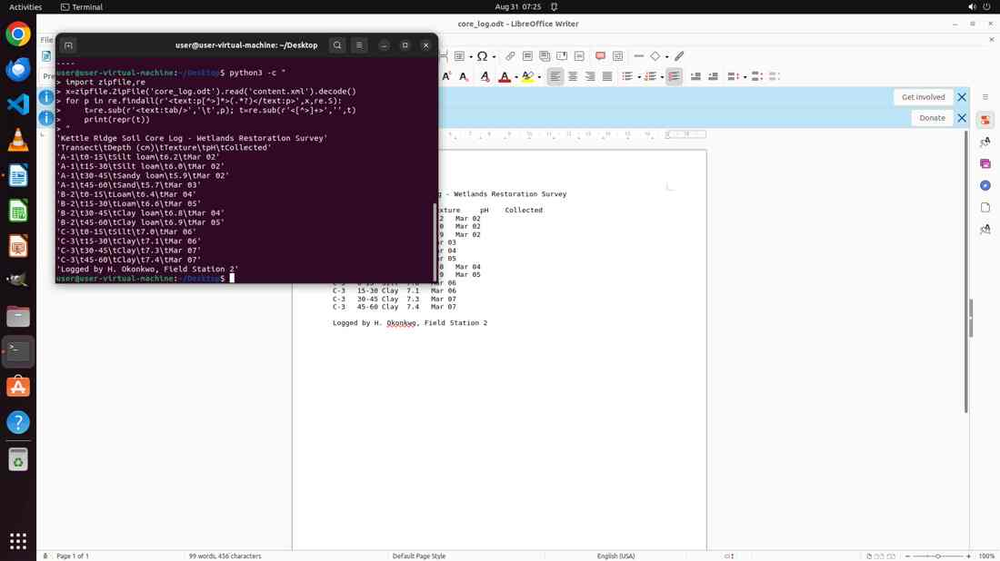